Abstract¶↑ Contents
This report develops a numerical study of differential phase-shift quantum key distribution (DPS-QKD) over free-space optical (FSO) links. It begins with post-quantum confidentiality needs, quantum/classical communication and authentication, then compares five protocol families: BB84, BBM92, Ekert91 (E91), Coherent One-Way (COW) and DPS. The reconciliation chapter explains Cascade, Winnow, LDPC and polar-code methods, together with key verification and Toeplitz privacy amplification. The main simulation then evaluates DPS pulse interference, weak coherent photon statistics, an illustrative modeled secret-key-rate (SKR) proxy, 20 km terrestrial optics, log-normal turbulence, detection-weighted QBER, LEO downlinks and trusted satellite networks.
The study further investigates the application of machine learning to optimize DPS-QKD performance by comparing conventional physics-based optimization with an ML-assisted approach. The results demonstrate the potential of machine learning to identify improved operating parameters and enhance the modeled secret key rate, while highlighting the trade-offs between optimization performance and computational efficiency. The simulation is also implemented in GNU Octave for comparative analysis and interactive visualization.
Introduction and Problem Statement¶↑ Contents
This section introduces the long-term confidentiality challenges posed by advances in quantum computing and their implications for existing cryptographic systems. It discusses emerging quantum security threats and introduces Post-Quantum Cryptography (PQC) and Quantum Key Distribution (QKD) as complementary approaches to securing future communications.
Long-Term Confidentiality and the Quantum Threat¶↑ Contents
Modern digital communication relies heavily on cryptographic algorithms to protect sensitive information transmitted across public and private networks. Although current encryption systems provide strong protection against conventional computing attacks, many widely deployed security protocols depend on public-key algorithms such as RSA and Elliptic Curve Cryptography (ECC) for key establishment and authentication. The rapid advancement of quantum computing introduces a significant long-term security concern because a sufficiently powerful, fault-tolerant quantum computer could break these algorithms using techniques such as Shor’s algorithm. This creates the Harvest-Now, Decrypt-Later (HNDL) threat, in which adversaries intercept and store encrypted communications today with the intention of decrypting them when future quantum computing capabilities become available. Information requiring confidentiality for many years, including financial records, healthcare data, government communications, intellectual property and critical infrastructure information, is particularly exposed to this risk. Although strong symmetric encryption such as AES-256 is not immediately considered broken by the same quantum attack, the compromise of vulnerable key-establishment mechanisms could expose the keys used to protect recorded communications.
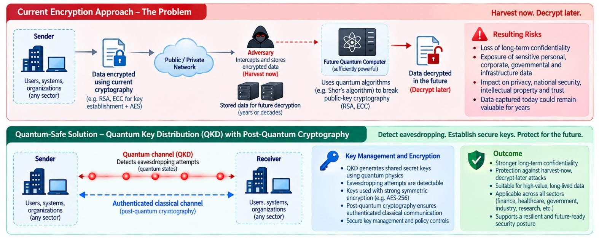
Shor’s Algorithm¶↑ Contents
RSA relies on a problem that is easy to perform in one direction and computationally difficult to reverse: multiplying two very large prime numbers is straightforward, while recovering those factors from their product is impractical for current conventional computers at cryptographic sizes. Shor’s algorithm changes this security assumption because a sufficiently capable fault-tolerant quantum computer could factor large integers efficiently. NIST notes that factoring sufficiently large integers could take billions of years using conventional computers, whereas a sufficiently powerful quantum computer could potentially complete the same task in hours or days. Current quantum computers are not yet capable of breaking RSA-2048.
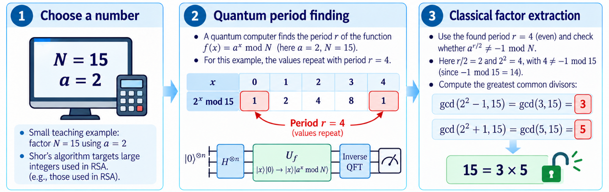
Quantum-Safe Approaches: PQC and QKD¶↑ Contents
This problem motivates the investigation of quantum-resistant approaches, including post-quantum cryptography and Quantum Key Distribution (QKD), which uses quantum-mechanical principles to establish shared secret keys. When appropriately implemented alongside authenticated communication, secure key management and strong symmetric encryption, QKD offers an alternative key-distribution mechanism for protecting sensitive information against future cryptographic threats.
Example: Suppose an organization has data that must remain confidential for 10 years. An attacker records encrypted traffic today. If the session keys were established using a public-key method that is vulnerable to a future quantum computer, and a sufficiently capable quantum-computing service becomes available before the 10-year confidentiality period expires, the attacker could potentially recover the old session secrets and decrypt the stored traffic while the information is still sensitive.
Possible organizational impact includes:
Exposure of confidential customer, financial, technical, or business data;
Breach of contractual or regulatory confidentiality obligations;
Loss of intellectual property or competitive information;
Incident-response, legal, notification, and recovery costs;
Reputational damage even though the original traffic was captured years earlier.
The purpose of quantum-safe key establishment is therefore not only to protect communications against attacks available today, but also to protect information whose required secrecy lifetime extends into the period when large fault-tolerant quantum computers may exist.
Project Objectives¶↑ Contents
The key objective of this project is to develop a simulation framework to evaluate DPS-QKD QBER and a modeled secret-key-rate proxy over free-space optical channels. The core model is extended to study log-normal atmospheric turbulence, ML-assisted parameter optimization and satellite/trusted-relay scenarios.
Scope of the Study¶↑ Contents
The study moves from the long-term confidentiality problem and QKD fundamentals through BB84, BBM92 and DPS, then covers QBER estimation, information reconciliation and privacy amplification before returning to the detailed DPS physical model. The model is applied to a 20 km terrestrial FSO link, atmospheric turbulence, ML-assisted parameter optimization, satellite and trusted-relay scenarios, and a banking application case study.
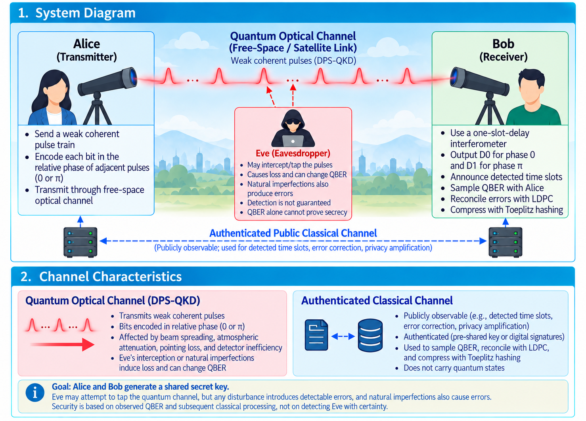
Fundamentals of Quantum Key Distribution¶↑ Contents
This section introduces the communication model common to the QKD protocols used in this study. It distinguishes the quantum channel, the authenticated classical channel and the classical post-processing stages that transform raw detection events into shared key material.
Quantum and Classical Channels, Threats and Authentication¶↑ Contents
Depending on the protocol, Alice prepares quantum signals for Bob (for example BB84/DPS) or Alice and Bob measure signals distributed from an entangled source (for example BBM92). They use an authenticated classical channel for the required public discussion—such as basis information, detection positions, parameter estimation, reconciliation data and verification—without publishing the undisclosed raw key. They estimate errors, reconcile, verify equality, and compress the key to limit Eve's information. Eve may observe or manipulate the optical channel and public discussion; authentication blocks an otherwise fatal man-in-the-middle impersonation. Photon loss or errors alone cannot identify Eve: hardware imperfections also cause them. Real devices require security analysis against side channels.
Example of why authentication matters: Without it, Eve can separately negotiate a key with Alice and another with Bob, then read and forward messages. A QBER check in each forged session need not expose her, because Eve is acting as an endpoint of two separate sessions rather than merely measuring and resending individual signals.
Why QKD Still Requires Authentication¶↑ Contents
QKD can reveal disturbances under its protocol and device assumptions, but it does not automatically prove the identity of the communicating parties.
The classical channel used for:
Basis announcements,
Parameter estimation,
Syndrome exchange,
Error correction, and
Privacy-amplification coordination
must therefore be authenticated.
If the classical channel is not authenticated, Eve can perform a man-in-the-middle (MITM) attack.
Instead of allowing Alice and Bob to establish one common key,
Eve can create two independent connections:
and
Alice may believe that her key is shared with Bob, while it is actually shared with Eve.
Bob may similarly believe that his key is shared with Alice, while it is actually shared with Eve.
Therefore, matching keys within a QKD session do not by themselves prove the identity of the remote party.
Worked authentication example
Eve negotiates two separate keys. Each forged session passes a local equality check, yet Alice and Bob do not share the same key. This example separates identity authentication from error estimation on an optical link.
Example calculation
=== Unauthenticated QKD Man-in-the-Middle Example ===
Session 1: Alice <-> Eve
Alice's key : 10110010
Eve's key : 10110010
Keys match? : TrueSession 2: Eve <-> Bob
Eve's key : 01011001
Bob's key : 01011001
Keys match? : True=== Alice versus Bob ===
Alice thinks her key belongs to Bob:
Alice: 10110010Bob thinks his key belongs to Alice:
Bob : 01011001Do Alice and Bob actually share the same key? False
Conclusion:
Alice successfully shares a key with Eve.
Bob successfully shares another key with Eve.
But Alice and Bob have NOT authenticated each other.
QKD Key-Processing Flow¶↑ Contents
At a high level, QKD proceeds from quantum-state preparation or entangled-state measurement to valid-event selection, parameter estimation and QBER sampling, information reconciliation, key verification and privacy amplification. These steps are coordinated over an authenticated classical channel without publishing the undisclosed raw key; the resulting shared key can then be supplied to conventional cryptographic protection.
Major QKD Protocols: BB84, BBM92, E91, COW and DPS¶↑ Contents
Table 1. Comparison of five QKD protocol concepts.
| Protocol | Optical idea | Example bit extraction | Main difference |
|---|---|---|---|
| BB84 | Four quantum states in two bases (H/V, D/A). | Keep detected events when announced bases match. | Prepare-and-measure; basis sifting; coherent-pulse implementations need appropriate security analysis. |
| BBM92 | An entangled source distributes correlated photon pairs. | Keep compatible-basis coincidence detections, applying the Bell-state correlation convention. | Entanglement-based; both optical arms must survive. |
| Ekert91 (E91) | Entangled singlet pairs; randomly selected measurement settings. | Use designated anti-correlated setting pairs for key bits. | Use Bell/CHSH test settings to check nonclassical correlations. |
| COW | Weak coherent pulses and vacuum in pairs of time slots. | Later pulse = 0; earlier pulse = 1. | Intensity/time-bin encoding, plus interferometric coherence monitoring. |
| DPS | A phase-modulated weak coherent pulse train. | Interfere adjacent pulses; detector port identifies relative phase bit. | Relative-phase encoding; no BB84-style basis switch; DPS-specific security needed. |
The following worked examples introduce BB84 and BBM92, extend the discussion to E91 and COW, and then develop the DPS protocol used for the numerical FSO calculations.
BB84 Protocol Demonstration¶↑ Contents
BB84 encodes each classical bit using one of two randomly selected quantum bases.
Two BB84 bases
The rectilinear basis (Z basis) uses:
Bit 0 -> Horizontal polarization, H
Bit 1 -> Vertical polarization, V
The diagonal basis (X basis) uses:
Bit 0 -> +45 degree polarization, D
Bit 1 -> -45 degree polarization, A
In this simulation we represent the bases numerically as:
0 -> Z basis (H/V)
1 -> X basis (D/A)
Alice randomly generates:
A raw binary key.
A random basis for every bit.
The corresponding quantum state.
Bob does not know Alice's basis while measuring the incoming photons. He therefore independently chooses a random measurement basis for every photon.
If Bob chooses the same basis as Alice, he obtains Alice's bit correctly in this idealized simulation.
If Bob chooses the wrong basis, quantum mechanics gives a random result, so Bob has a 50% probability of obtaining either 0 or 1.
After the quantum transmission is complete, Alice and Bob publicly announce only their basis choices over an authenticated classical channel.
They do not reveal their secret bit values.
They keep only positions where their bases matched. This process is called basis sifting.
For random independent basis choices,
so approximately half of the transmitted bits survive BB84 sifting.
This first example represents an ideal BB84 channel with no Eve, no detector noise and no optical errors. Therefore, whenever Alice and Bob use the same basis, their retained bits are identical.
With seed 42, Alice prepares 16 random bits and independently chooses their bases. Bob independently chooses measurement bases. Matching bases recover Alice’s bit in this ideal example; mismatched bases return a random outcome. The keep mask determines the retained positions.
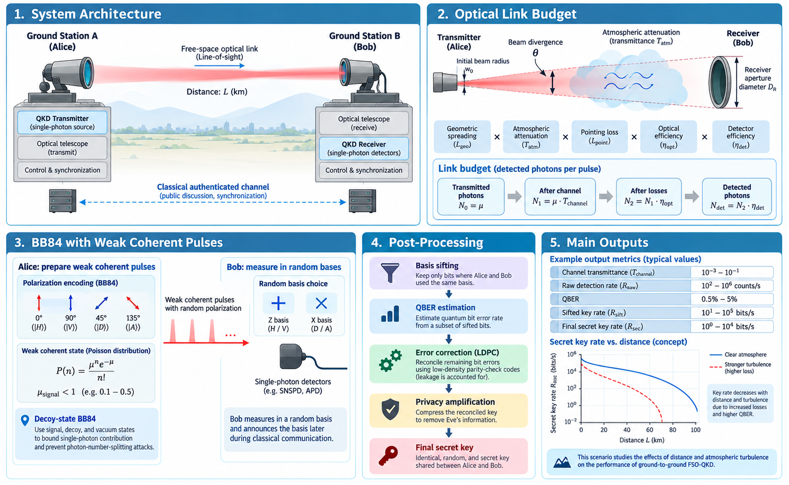
Example calculation
STEP 1 - Alice generates a random raw key
Alice bits:
1010110111110000STEP 2 - Alice randomly selects encoding bases
Alice bases:
0010101111000111STEP 3 - Alice prepares BB84 quantum states
States:
V H A H A V D A A A V V H D D DSTEP 4 - Bob randomly selects measurement bases
Bob bases:
1110100010111011STEP 5 - Bob's measurement results
Bob bits:
1110111111010100STEP 6 - Public basis announcement
Alice bases: 0010101111000111
Bob bases: 1110100010111011STEP 7 - Matching basis positions
Keep mask:
0011110010000011
Matching positions (0-based):
[2, 3, 4, 5, 8, 14, 15]STEP 8 - Sifted keys
Alice sifted key: 1011100
Bob sifted key: 1011100STEP 9 - Compare sifted keys
Sifted keys identical? TrueSTEP 10 - Sifting statistics
Photons transmitted : 16
Bits retained : 7
Sifting ratio : 43.75%
Theoretical average : ~50%
Each row identifies Alice’s bit and encoding basis, the prepared polarization, Bob’s basis and outcome, and the sifting decision. Discarded mismatched-basis observations do not enter the final comparison.
Table 2. Complete BB84 transmission record
| Index | Alice bit | Alice basis | State | Bob basis | Bob bit | Match | Keep |
|---|---|---|---|---|---|---|---|
| 0 | 1 | Z (H/V) | V | X (D/A) | 1 | NO | DROP |
| 1 | 0 | Z (H/V) | H | X (D/A) | 1 | NO | DROP |
| 2 | 1 | X (D/A) | A | X (D/A) | 1 | YES | YES |
| 3 | 0 | Z (H/V) | H | Z (H/V) | 0 | YES | YES |
| 4 | 1 | X (D/A) | A | X (D/A) | 1 | YES | YES |
| 5 | 1 | Z (H/V) | V | Z (H/V) | 1 | YES | YES |
| 6 | 0 | X (D/A) | D | Z (H/V) | 1 | NO | DROP |
| 7 | 1 | X (D/A) | A | Z (H/V) | 1 | NO | DROP |
| 8 | 1 | X (D/A) | A | X (D/A) | 1 | YES | YES |
| 9 | 1 | X (D/A) | A | Z (H/V) | 1 | NO | DROP |
| 10 | 1 | Z (H/V) | V | X (D/A) | 0 | NO | DROP |
| 11 | 1 | Z (H/V) | V | X (D/A) | 1 | NO | DROP |
| 12 | 0 | Z (H/V) | H | X (D/A) | 0 | NO | DROP |
| 13 | 0 | X (D/A) | D | Z (H/V) | 1 | NO | DROP |
| 14 | 0 | X (D/A) | D | X (D/A) | 0 | YES | YES |
| 15 | 0 | X (D/A) | D | X (D/A) | 0 | YES | YES |
BB84 sifted-key check
QBER is calculated only on the retained positions. Seven of sixteen positions survive in this finite example, so the observed 43.75% sifting ratio differs from its 50% expectation.
Calculation
Sifted key length : 7
Errors : 0
QBER : 0.00%
BBM92 Protocol Demonstration¶↑ Contents
BBM92 is an entanglement-based quantum key distribution protocol.
Unlike BB84, Alice does not prepare a classical bit and encode it into a photon.
Instead, an entangled-photon source generates pairs of photons. One photon is sent to Alice and the other photon is sent to Bob.
In this educational example, the source produces the Bell state:
The same state can also be written in the diagonal basis as:
Therefore, if Alice and Bob measure their photons using the same basis, their measurement results are perfectly correlated in an ideal system.
Measurement bases
Alice and Bob independently select one of two measurement bases:
• 0 -> Z basis (H/V)
• 1 -> X basis (D/A)
The bit mapping used in this simulation is:
Z basis
• H -> bit 0
• V -> bit 1
X basis
• D (+45 degrees) -> bit 0
• A (-45 degrees) -> bit 1
Alice and Bob independently and randomly select their measurement bases.
If both select the same basis:
their measurement results are correlated:
for the ideal Bell state used here.
If their bases are different, the outcomes do not provide deterministic shared-key information and those positions are discarded during sifting. After all measurements are complete, Alice and Bob publicly announce only their basis choices over an authenticated classical channel. They keep only positions where their bases matched.
For independently random basis choices:
so approximately half of the detected entangled photon pairs survive basis sifting.
This first BBM92 simulation assumes an ideal entangled source, perfect detectors, no channel noise and no Eve. Therefore the QBER of the sifted key should be 0%.
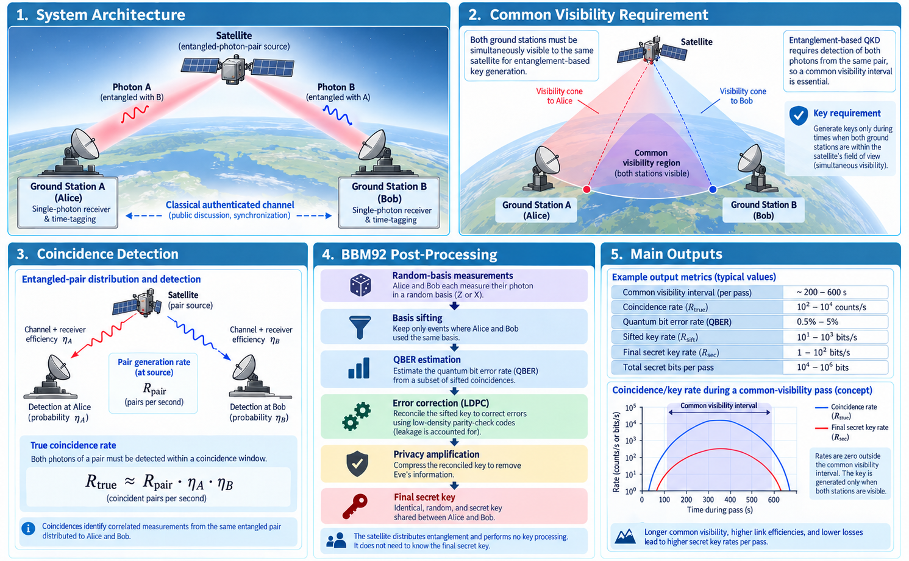
The example defines sixteen entangled-pair positions and the correlated outcome convention for the Bell state Phi-plus. It samples the ideal measurement outcomes; it does not propagate a laboratory source or density matrix.
Example calculation
STEP 1 - Entangled photon source
Bell state:
|Phi+> = (|HH> + |VV>) / sqrt(2)Number of entangled pairs produced: 16
BBM92: Alice selects measurement bases
Alice independently chooses Z or X for every pair. Z denotes H/V and X denotes D/A.
STEP 2 - Alice selects random measurement bases
Alice basis:
1010110111110000BBM92: Bob selects measurement bases
Bob’s basis sequence is independent of Alice’s. The public comparison occurs after measurement.
STEP 3 - Bob selects random measurement bases
Bob basis:
0010101111000111BBM92: sample correlated outcomes
For the chosen Bell state, same-basis outcomes agree ideally. Incompatible bases give random relative outcomes.
STEP 4 - Measurement outcomes
Alice measurement bits:
0111111101011010
Bob measurement bits:
0111110101011100BBM92: map bits to detector outcomes
The sampled binary results are translated back to physical polarization labels using each station’s selected basis.
STEP 5 - Physical detector outcomes
Alice:
D V A V A A V A D A D A V H V H
Bob:
H V A V A V D A D A H V V A D DBBM92: public basis announcement
Only basis choices are announced for sifting; the undisclosed measurement bits remain private within the ideal teaching example.
STEP 6 - Public basis announcement
Alice bases: 1010110111110000
Bob bases: 0010101111000111BBM92: identify compatible positions
The Boolean keep mask selects matching-basis pairs. Positions are indexed from zero throughout these worked examples.
STEP 7 - Matching basis positions
Keep mask:
0111100111001000
Matching positions (0-based):
[1, 2, 3, 4, 7, 8, 9, 12]BBM92: extract the sifted strings
Alice and Bob retain the same subset of pair positions and form their respective sifted strings.
STEP 8 - BBM92 sifted keys
Alice sifted key: 11111011
Bob sifted key: 11111011BBM92: verify ideal correlations
The comparison checks the correlation convention rather than testing a real entangled source.
STEP 9 - Compare sifted keys
Alice: 11111011
Bob: 11111011Sifted keys identical? True
BBM92: count retained pairs
The retained fraction is an outcome of this finite random example, with a theoretical matching-basis probability of one half.
STEP 10 - Sifting statistics
Entangled pairs generated : 16
Pairs retained : 8
Sifting ratio : 50.00%
Theoretical average : ~50%
The complete row-by-row record shows basis compatibility and the resulting retained pair outcomes.
Table 3. Complete BBM92 measurement record
| Pair | Alice basis | Alice state | Alice bit | Bob basis | Bob state | Bob bit | Keep |
|---|---|---|---|---|---|---|---|
| 0 | X (D/A) | D | 0 | Z (H/V) | H | 0 | DROP |
| 1 | Z (H/V) | V | 1 | Z (H/V) | V | 1 | YES |
| 2 | X (D/A) | A | 1 | X (D/A) | A | 1 | YES |
| 3 | Z (H/V) | V | 1 | Z (H/V) | V | 1 | YES |
| 4 | X (D/A) | A | 1 | X (D/A) | A | 1 | YES |
| 5 | X (D/A) | A | 1 | Z (H/V) | V | 1 | DROP |
| 6 | Z (H/V) | V | 1 | X (D/A) | D | 0 | DROP |
| 7 | X (D/A) | A | 1 | X (D/A) | A | 1 | YES |
| 8 | X (D/A) | D | 0 | X (D/A) | D | 0 | YES |
| 9 | X (D/A) | A | 1 | X (D/A) | A | 1 | YES |
| 10 | X (D/A) | D | 0 | Z (H/V) | H | 0 | DROP |
| 11 | X (D/A) | A | 1 | Z (H/V) | V | 1 | DROP |
| 12 | Z (H/V) | V | 1 | Z (H/V) | V | 1 | YES |
| 13 | Z (H/V) | H | 0 | X (D/A) | A | 1 | DROP |
| 14 | Z (H/V) | V | 1 | X (D/A) | D | 0 | DROP |
| 15 | Z (H/V) | H | 0 | X (D/A) | D | 0 | DROP |
BBM92 sifted-key error rate
The ideal same-basis strings agree, giving zero mismatches. Atmospheric two-arm coincidence rates are outside this introductory example.
Calculation
BBM92 sifted key length : 8
BBM92 errors : 0
BBM92 QBER : 0.00%
Ekert91 (E91): Entanglement and the CHSH Test¶↑ Contents
Ekert91 uses entangled photon pairs and tests correlations that cannot be reproduced by local hidden-variable models under the standard assumptions of a Bell test. In this project it is a protocol-level teaching demonstration; its key-rate/security model is not substituted into the later DPS-FSO calculations. A convenient state is the singlet |Ψ⁻⟩ = (|01⟩ − |10⟩)/√2. For identical measurement axes the outcomes are ideally anti-correlated; Bob can invert his key bits under the stated mapping.
Alice and Bob independently select from three measurement observables each. Designated matching-direction pairs, such as (A₁,B₁) and (A₃,B₃) in the notebook convention, form sifted-key candidates. Other setting pairs estimate the CHSH correlators. They disclose the measurement settings, rather than publishing the undisclosed key outcomes. The appropriate security and parameter-estimation tests must succeed before reconciliation and privacy amplification.
S = | ⟨A₁B₃⟩ + ⟨A₁B₂⟩ + ⟨A₂B₃⟩ − ⟨A₂B₂⟩ |
Classical CHSH bound: S ≤ 2 | Ideal quantum setting: S = 2√2 ≈ 2.828
For the settings used in the notebook, the first three CHSH correlators equal −1/√2 and the fourth equals +1/√2, yielding |S| = 2√2. A measured value above 2 violates the specified classical CHSH bound, but a violation alone is not a complete deployment security proof. A measured S ≤ 2 fails this particular entanglement-security test; it is not automatic evidence of a specific attacker.
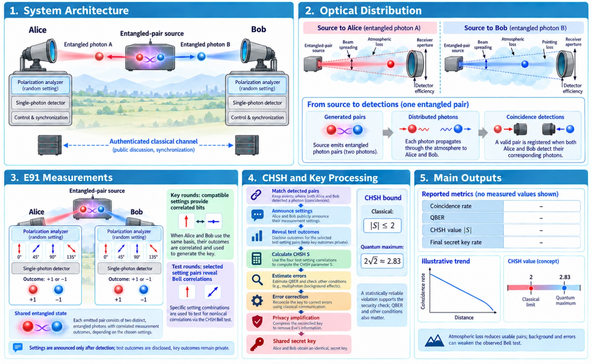
Table 4. E91 Operation.
| E91 stage | Alice/Bob operation | Observation or retained data |
|---|---|---|
| Distribution | Entangled source sends one photon to each party. | Coincident detections, subject to losses. |
| Random settings | Select three observables independently. | Authenticated publication of settings. |
| Sifting | Use designated anti-correlated pairs. | Reverse Bob bit convention where applicable. |
| CHSH analysis | Pool four specified setting correlations. | Compare S with classical bound 2. |
| Post-processing | Reconciliation, verification, privacy amplification. | Final key only after protocol-appropriate security testing. |
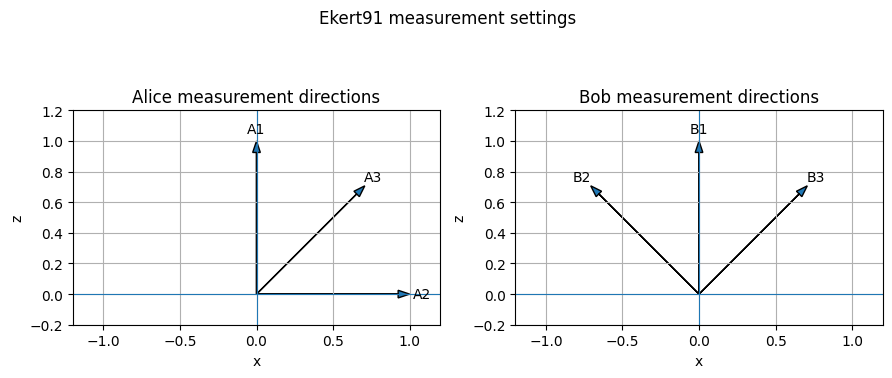
Coherent One-Way (COW): Time Bins and Coherence Monitoring¶↑ Contents
Coherent One-Way QKD transmits weak coherent pulses arranged in pairs of time slots. In the notebook convention, |0⟩ denotes a vacuum slot and |α⟩ a coherent optical pulse. Information is encoded by the occupied time slot: bit 0 uses (|0⟩,|α⟩), while bit 1 uses (|α⟩,|0⟩). Null (vacuum/vacuum) slots and control (pulse/pulse) slots can also be defined for teaching and monitoring purposes.
COW bit 0: (|0⟩, |α⟩) COW bit 1: (|α⟩, |0⟩)
Bob divides the incoming optical signal between a data detector and an interferometric monitoring line. The data detector determines which time bin is occupied; the delay interferometer tests coherence between adjacent non-empty pulses. Coherence monitoring is essential because simply detecting the pulse arrival time does not test every disturbance relevant to a coherent-state protocol. COW avoids the random basis switching used in BB84, but it has its own security assumptions and limitations.
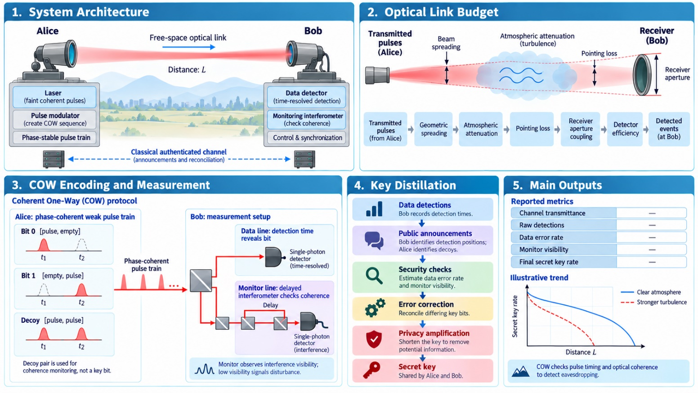
Table 5. COW pulses.
| Pair pattern | Interpretation | Receiver observation |
|---|---|---|
| Vacuum, pulse | Bit 0 | Detection in later slot on data line. |
| Pulse, vacuum | Bit 1 | Detection in earlier slot on data line. |
| Pulse, pulse | Coherence/control sequence | Relevant interference on monitoring line. |
| Vacuum, vacuum | Null sequence | No intentionally transmitted data pulse. |
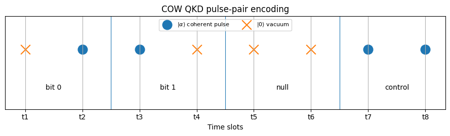
Comparison to DPS: both exploit coherent pulse sequences and avoid BB84-style basis switching. COW data bits are encoded primarily by time-slot occupancy, whereas DPS encodes the bit in the relative phase of successive pulses and reads it with a one-slot-delay interferometer. The notebook simulates COW as a teaching protocol; Section 12 and the satellite calculations remain DPS-based.
DPS-QKD Differential Phase Encoding¶↑ Contents
Differential Phase Shift Quantum Key Distribution (DPS QKD) uses a sequence of weak coherent optical pulses.
Unlike BB84, information is not encoded in the absolute polarization of each individual photon.
Instead, the secret bit is encoded in the phase difference between two consecutive optical pulses.
For pulse ,
where:
• is the mean photon number per pulse
• is the optical phase of pulse
The information bit is determined by the phase difference between consecutive pulses:
The encoding rule is:
• Bit 0 -> no phase change
• Bit 1 -> phase change of
Therefore, Alice does not encode a bit into one isolated pulse.
Instead:
For example, consider the DPS data bits:
1 0 1 1 0
We start with an arbitrary reference phase:
and generate every following pulse phase according to:
This produces six optical pulses for five DPS bits.
Bob uses a delay-line Mach-Zehnder interferometer with a delay equal to one pulse period.
This causes pulse to interfere with pulse .
In an ideal system:
• Equal phases -> Detector 0 clicks
• Opposite phases -> Detector 1 clicks
Therefore:
and
This first example assumes an ideal optical channel with no loss, detector noise, turbulence or eavesdropper.
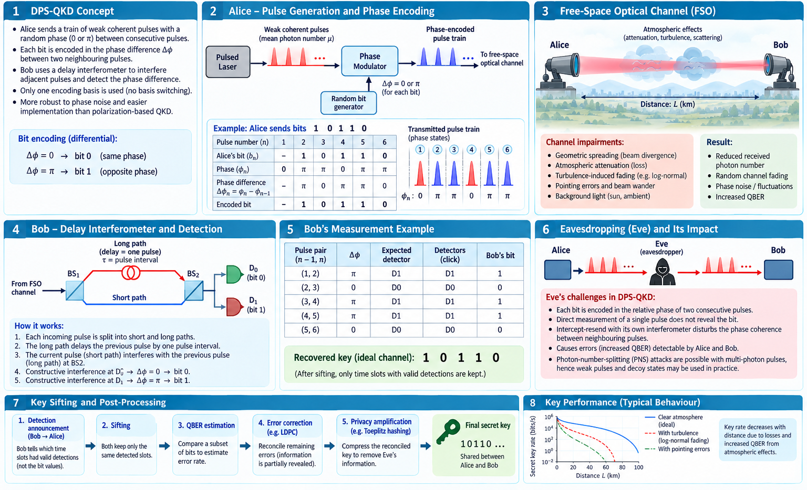
The five-bit sequence 10110 specifies the relative phase differences of a six-pulse train. The initial pulse is a phase reference.
Example calculation
STEP 1 - Alice's DPS information bits
Relative bits: 10110DPS: accumulate the absolute phases
Starting from zero, each bit adds either zero or pi, modulo two pi. This produces the absolute phase sequence from which adjacent differences carry the key.
STEP 2 - Absolute pulse phases
Pulse phases / pi: [0, 1, 1, 0, 1, 1]DPS: recover adjacent phase differences
Consecutive pulse phases are subtracted modulo two pi. The resulting differences recover the originally encoded relative pattern.
STEP 3 - Consecutive phase differences
Raw Delta phi / pi: [1, 0, -1, 1, 0]DPS: decode the phase pattern
A relative phase of zero maps to bit zero and a relative phase of pi maps to bit one.
STEP 4 - Decode relative phases
Original DPS bits: 10110
Decoded DPS bits : 10110
Correct decoding? : TrueDPS: calculate the interferometer outputs
Using a coherent amplitude sqrt(mu) exp(i phi) with mu = 0.5 for this ideal demonstration, the delayed and direct fields are added and subtracted at the two output ports.
STEP 5 - Ideal interferometer output
Detector D0 intensity: [0. 0.5 0. 0. 0.5]
Detector D1 intensity: [0.5 0. 0.5 0.5 0. ]DPS: make the ideal detector decision
The stronger ideal output port identifies the relative bit. This deterministic teaching decision precedes the probabilistic noisy detector model.
STEP 6 - Detector decisions
Detector sequence: ['D1', 'D0', 'D1', 'D1', 'D0']
Bob decoded bits: 10110
Alice DPS bits : 10110
Alice == Bob ? : True
The table connects each adjacent pair to its input bit, relative phase, output intensities, selected detector and decoded bit.
Table 6. Complete DPS pulse-pair calculation
| Bit | Pulse pair | Previous φ/π | Current φ/π | Δφ/π | D0 intensity | D1 intensity | Click | Decoded |
|---|---|---|---|---|---|---|---|---|
| 0 | P0-P1 | 0 | 1 | 1 | 0.00 | 0.50 | D1 | 1 |
| 1 | P1-P2 | 1 | 1 | 0 | 0.50 | 0.00 | D0 | 0 |
| 2 | P2-P3 | 1 | 0 | 1 | 0.00 | 0.50 | D1 | 1 |
| 3 | P3-P4 | 0 | 1 | 1 | 0.00 | 0.50 | D1 | 1 |
| 4 | P4-P5 | 1 | 1 | 0 | 0.50 | 0.00 | D0 | 0 |
Why DPS-QKD Is the Focus of This Project¶↑ Contents
BB84 and BBM92 are retained as reference teaching protocols. The remainder of this project concentrates on DPS-QKD because the stated project objective is to evaluate DPS QBER and modeled/asymptotic secret-key-rate performance over free-space optical channels, including atmospheric turbulence, machine-learning-assisted parameter optimization and satellite extensions.
QKD Errors, Information Reconciliation and Privacy Amplification¶↑ Contents
The preceding protocol examples produce raw or sifted bit strings, but those strings are not yet ready for cryptographic use. Practical QKD therefore requires parameter estimation, information reconciliation, key verification and privacy amplification before the final shared key is released.
Error Sources and QBER Estimation from Disclosed Samples¶↑ Contents
, for a randomly disclosed sample of detected positions. The sample is discarded from the final key; finite sampling uncertainty must be bounded. Higher QBER can mean alignment, phase drift, background, or attack. It is a warning statistic, not a proof of Eve.
Disclosed-sample calculation
A 1,200-bit simulated pair is generated with an input mismatch probability of 0.035. Two hundred positions are disclosed without replacement and then removed; the simulator also inspects the remaining positions to demonstrate sampling variation.
Example calculation
Disclosed sample errors: 5 / 200
Estimated QBER: 2.50%
Undisclosed positions left for reconciliation: 1000
True undisclosed QBER (simulator only): 4.60%
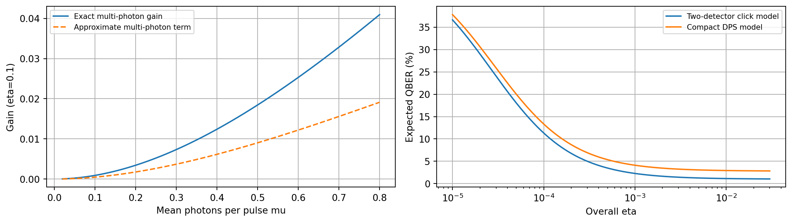
Information Reconciliation and Syndrome/LDPC Decoding¶↑ Contents
After parameter estimation, Alice and Bob retain noisy versions of the same intended key. A binary parity-check matrix maps a key to a public syndrome
In the convention used in the implemented calculation, Bob sends his syndrome
over the authenticated classical channel. Alice computes her own syndrome , then forms
The vector is the error pattern. For the deliberately tiny 8-bit example below, we know there are exactly two errors, so the code exhaustively tests all
two-bit patterns and finds the unique pair whose syndrome equals . Alice flips those two positions and obtains Bob's reconciled key.
Important: this exhaustive two-error search is a teaching demonstration of syndrome decoding, not practical LDPC belief-propagation/min-sum decoding. Real QKD reconciliation uses much longer, carefully designed sparse LDPC codes, an estimated channel error probability, iterative decoding, verification, a failure policy, and explicit leakage accounting.
The disclosed syndrome leaks information. For a binary parity-check matrix, the number of independent syndrome bits is at most
not simply the floating-point numerical rank. That reconciliation leakage must be included when sizing privacy amplification.
Eight-bit syndrome decoding: complete arithmetic
The sparse 4-by-8 matrix has rows 11000001, 01111000, 00010011 and 10100110. Bob supplies his syndrome. Under the explicit exactly-two-errors assumption, all 28 candidate column pairs are searched. Alice flips the unique matching pair; binary row reduction gives the GF(2) rank.
Example calculation
Alice's sifted key : 10110010
Bob's sifted key : 10010110Alice syndrome s_A : 1001
Bob syndrome s_B : 1101
Syndrome difference: 0100Candidate error pairs: [(2, 5)]
Detected error positions (0-based): (2, 5)
Alice before correction : 10110010
Alice after correction : 10010110
Bob's key : 10010110Keys match? True
Syndrome bits transmitted: 4
Independent syndrome bits <= rank_GF2(H) = 4
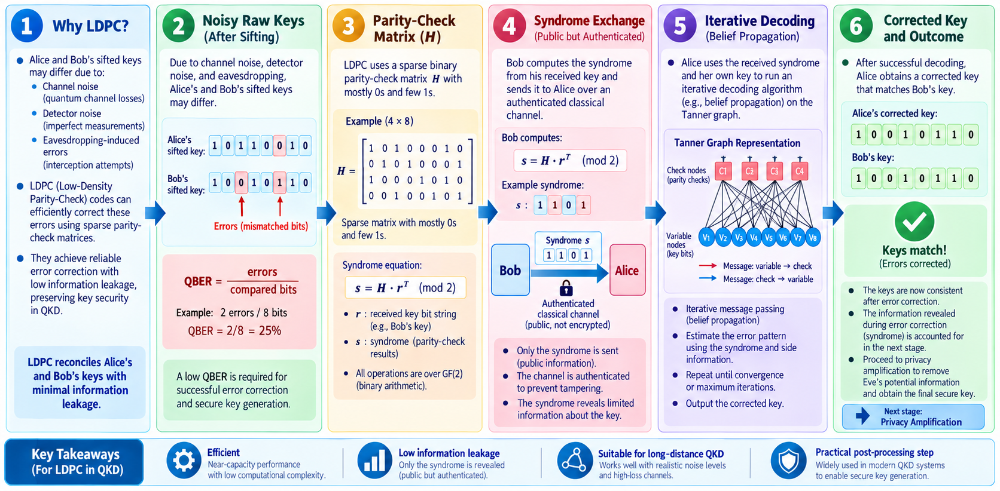
Key Verification
After reconciliation, Alice and Bob must verify that their corrected keys agree before using them as input to privacy amplification. The worked syndrome example above demonstrates equality with the reported “Keys match? True” result. In a practical system, verification is normally performed with a short authenticated hash or tag; its information leakage, authentication cost and residual failure probability must be included in the protocol accounting.
Cascade: Interactive Parity-Based Reconciliation¶↑ Contents
Cascade divides Alice’s and Bob’s sifted strings into blocks, exchanges block parities over an authenticated public channel, and locates an odd-error block by repeated bisection. After one error is corrected, earlier partitions can be revisited because previously hidden even-error combinations may become detectable. Practical Cascade uses several passes, randomly permuted block assignments and carefully chosen block lengths.
Parity(block) = (Σ bit values in the block) mod 2
Worked concept: if Alice’s block parity is 0 and Bob’s is 1, an odd number of discrepancies is present. Divide the block in half, compare one half’s parity, select the half containing the discrepancy, and continue until a single bit is located. The public parity transcript leaks information and must be included in the privacy-amplification budget. The notebook’s short example demonstrates parity search logic, not a throughput-optimized production implementation.
Winnow: Parity Tests with Hamming Syndromes¶↑ Contents
Winnow combines a block-parity check with a Hamming-code syndrome. If a parity mismatch is detected and a single-error assumption is appropriate, a short syndrome difference can identify the differing bit with fewer interactive searches than Cascade. In the notebook’s illustrative Hamming (7,4) example, four information bits produce a seven-bit codeword and a three-bit parity-check syndrome.
Δs = Hx_Aᵀ ⊕ Hx_Bᵀ = Heᵀ (all operations over GF(2))
For an error vector e containing one nonzero position, Δs equals the corresponding column of H and identifies the candidate error location. A nonzero syndrome does not guarantee a correct one-bit correction if multiple errors are present; practical protocols include block screening, privacy leakage accounting and verification. The notebook’s small Winnow cell is a structural demonstration, not an end-to-end measured reconciliation efficiency result.
Polar-Code Reconciliation and Frozen-Bit Design¶↑ Contents
Polar codes use channel polarization to create synthesized bit-channels with differing reliabilities. The most reliable positions carry information bits, whereas less reliable positions are treated as frozen; decoder design uses reliability information from the observed channel/QBER. For block length N = 2ⁿ, the basic transform is constructed from repeated Kronecker products of the binary kernel F = [[1,0],[1,1]].
G_N = F⊗n over GF(2), with F = [[1,0],[1,1]]
The notebook illustrates an N = 8 polarization transform and a sample information/frozen-position assignment. It does not establish a production polar code reliability sequence, finite-length reconciliation leakage or a full successive-cancellation/list decoder. The correct practical comparison among Cascade, Winnow, LDPC and Polar depends on code rate, decoder implementation, channel conditions, interaction latency, information leakage and verification failure probability.
Comparison of Reconciliation Options¶↑ Contents
Table 7. Reconciliation Methods.
| Method | Principle | Advantages | Limits / project status |
|---|---|---|---|
| Cascade | Multiple parity passes and recursive bisection. | Simple logic; effective on low-error strings. | Interactive; many messages. Notebook teaching example. |
| Winnow | Block parity plus Hamming syndrome. | Fewer parity-search exchanges than Cascade. | Multi-error ambiguity; notebook (7,4) example. |
| LDPC | Sparse parity-check syndrome and iterative decoding. | Efficient one-way reconciliation in mature implementations. | Notebook has compact syndrome example, not full practical decoder. |
| Polar | Channel-polarized transform and frozen positions. | Structured low-complexity decoder families. | Notebook has N=8 structural illustration only. |
Security accounting for all methods: public syndrome/parity disclosures and authentication/verification tags reduce the extractable key length. Consequently, the generic Section 12 term 1.16 h₂(QBER) represents an assumed reconciliation inefficiency rather than a measured leakage for any of the four demonstrations.
Privacy Amplification with Toeplitz Hashing¶↑ Contents
Error correction makes Alice's and Bob's reconciled keys identical, but it does not remove Eve's possible partial knowledge of the key.
Privacy amplification compresses the reconciled key using a random, publicly known universal hash function. A commonly used construction in QKD is a binary Toeplitz matrix, whose values are constant along each diagonal.
For a reconciled key:
Alice and Bob calculate the final key as:
where is an Toeplitz matrix.
For this example:
Therefore:
An Toeplitz matrix requires:
random seed bits.
The Toeplitz matrix and its seed may be public. Security does not depend on keeping secret. In the implemented calculation the seed is fixed only to make the demonstration reproducible; a real protocol chooses the universal hash according to its security procedure.
Example
For a separate 16-bit privacy-amplification example (not a continuation of the preceding 8-bit syndrome toy example), Alice and Bob have the same reconciled key:
Using the Toeplitz matrix:
and:
Both obtain the same 8-bit output:
Eve also knows the public Toeplitz matrix. However, suppose Eve's estimate of the reconciled key is:
Eve applies the same Toeplitz matrix:
and obtains:
Therefore, in this example:
What Happens to Eve?
Alice and Bob:
1011001010011010
becomes:
00000011
Eve's incorrect estimate:
1001011010010010
becomes:
01010101
Therefore:
Alice = Bob
but:
Eve != Alice/Bob
Important: Privacy amplification does not depend on Eve being computationally unable to calculate the hash. Eve knows the Toeplitz matrix and can perform the same calculation. Security comes from Eve's uncertainty about the reconciled key and from compressing that key sufficiently so that Eve's remaining information about the final key becomes negligibly small.
Hash-collision caveat: Eve having an incorrect 16-bit estimate does not mathematically guarantee a different 8-bit hash value; different inputs can collide under any compression hash. The displayed Eve value is one concrete example. QKD privacy amplification is justified statistically by universal hashing and a lower bound on Eve's conditional smooth min-entropy, not by requiring every wrong Eve input to produce a different hash.
Critical Sizing Rule
In a real QKD implementation, the final key length must be determined from a proven security bound.
The calculation must account for:
Eve's estimated information
Error-correction leakage
QBER and parameter-estimation results
Finite-key effects
Required security margin
Therefore, the 16-bit to 8-bit compression shown here is an educational example only.
The result:
00000011
is a reproducible privacy-amplification output, but it should not be interpreted as a certified 8-bit secret key unless the required QKD security bound has first been established.
Sixteen-to-eight-bit Toeplitz calculation
This is a separate example with a new 16-bit shared input. The first row is 1010011010110010 and the first column is 10100000. The fixed matrix makes the arithmetic reproducible; its public seed occupies 23 independent positions.
Example calculation
Toeplitz matrix:
[[1 0 1 0 0 1 1 0 1 0 1 1 0 0 1 0]
[0 1 0 1 0 0 1 1 0 1 0 1 1 0 0 1]
[1 0 1 0 1 0 0 1 1 0 1 0 1 1 0 0]
[0 1 0 1 0 1 0 0 1 1 0 1 0 1 1 0]
[0 0 1 0 1 0 1 0 0 1 1 0 1 0 1 1]
[0 0 0 1 0 1 0 1 0 0 1 1 0 1 0 1]
[0 0 0 0 1 0 1 0 1 0 0 1 1 0 1 0]
[0 0 0 0 0 1 0 1 0 1 0 0 1 1 0 1]]Toeplitz matrix shape: (8, 16)
Before privacy amplification:
Alice : 1011001010011010
Bob : 1011001010011010
Eve : 1001011010010010Eve's wrong bit positions: [ 2 5 12]
Number of Eve errors: 3After Toeplitz privacy amplification:
Alice final key : 00000011
Bob final key : 00000011
Eve final guess : 01010101Alice == Bob ? True
Alice == Eve ? FalsePublic Toeplitz seed bits: 23
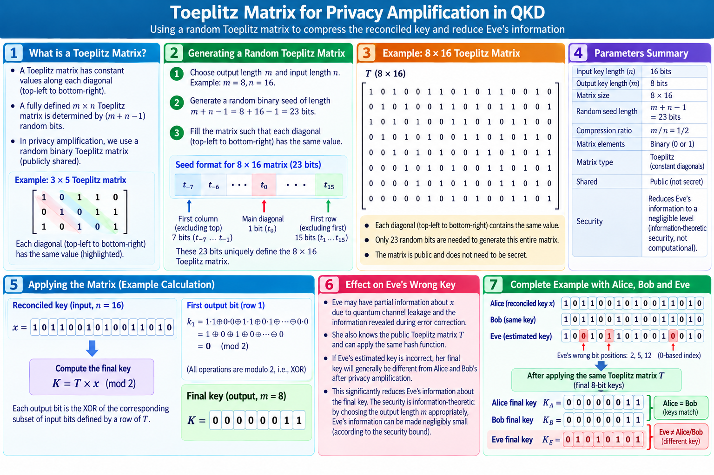
Eavesdropping (Eve) and QBER in DPS-QKD¶↑ Contents
This is an example to demonstrate how loss of the relative-phase information used in Differential Phase Shift QKD (DPS-QKD) can increase Bob’s Quantum Bit Error Rate (QBER). It is a simplified numerical disturbance model, not a proof that every eavesdropping strategy causes the same error rate.
DPS detector model
Alice encodes each bit using the relative phase between consecutive coherent pulses: 0 for bit 0 and π for bit 1. Bob’s one-bit-delay interferometer directs the interference to detector D0 or D1. With visibility V = 0.96 and no other noise, the expected wrong-detector probability for the correct phase is:
q₀ = (1 − V) / 2 = (1 − 0.96) / 2 = 0.02 = 2%
Suppose Eve replaces some received symbols with pulses whose relative phases are independent random choices of 0 or π. For the affected detected events, the resend phase matches Alice’s encoded phase half the time and reverses it half the time:
qₑ = ½[(1 − V)/2] + ½[(1 + V)/2] = ½ = 50%
Let f be the fraction of Bob’s accepted detection events affected by this random-phase replacement (rather than the fraction of individual transmitted pulses). For equal detection-event weighting, the expected combined QBER is:
QBER(f) = (1 − f)q₀ + f qₑ = 0.02 + 0.48f
Worked example: 10,000 accepted DPS detections
If 10% of accepted detections are affected (f = 0.10), 9,000 remain at the normal 2% error level and 1,000 have an expected 50% error level:
Expected errors = (9,000 × 0.02) + (1,000 × 0.50) = 180 + 500 = 680
QBER = 680 / 10,000 × 100 = 6.8%
Table 8. Compact-model parameters and definitions.
| Affected detections | Expected wrong bits | Expected QBER | 5% design criterion |
|---|---|---|---|
| 0% | 200 | 2.0% | Pass |
| 5% | 440 | 4.4% | Pass |
| 10% | 680 | 6.8% | Fail |
| 20% | 1,160 | 11.6% | Fail |
Interpretation of the 5% and 11% values
The illustrative 5% operating constraint is exceeded once f > (0.05 − 0.02)/0.48 = 6.25% of accepted detection events. A 11% QBER level is reached at f = 18.75%. The commonly quoted ≈11% theoretical threshold applies to a specific ideal asymptotic BB84 security model with one-way processing; it is NOT a general security threshold for DPS-QKD. Consequently, this project adopts QBER < 5% as a conservative engineering selection criterion, not as evidence of a DPS security guarantee.
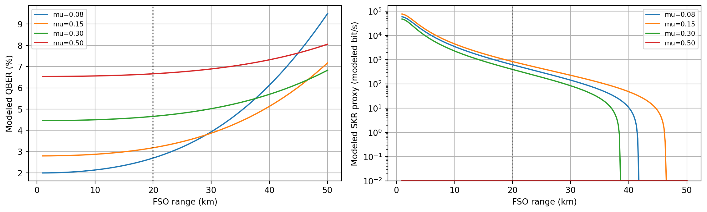
DPS-QKD Detailed Physical and Numerical Model¶↑ Contents
Earlier section defined the weak coherent pulse amplitude and the relative DPS bit . Here we use those definitions to build the optical and detector model used later for QBER and rate calculations.
Delay-Line Mach-Zehnder Interferometer
Bob uses an unbalanced Mach-Zehnder interferometer whose path-length difference corresponds to exactly one pulse period. Consequently, pulse interferes with the delayed copy of pulse .
The ideal output fields are proportional to:
and:
The corresponding output intensities are:
and:
where:
Ideal Detector Behavior
For equal consecutive phases, and , so:
Detector 0 is therefore favored and represents bit 0:
For opposite consecutive phases, and , so:
Detector 1 is therefore favored and represents bit 1:
Number of Usable DPS Bits
If Alice transmits pulses, information is obtained from adjacent pulse pairs, giving an ideal maximum of:
relative-phase positions. For example, six pulses P0 P1 P2 P3 P4 P5 contain five adjacent pairs: P0-P1, P1-P2, P2-P3, P3-P4, and P4-P5.
Thus:
In a practical system, guard intervals, detector dead time and synchronization requirements may reduce the usable number of detection gates. For rate plots later in this report, the pulse clock is set to 10 MHz. For long pulse trains, the number of interior DPS gates per second is approximated by the pulse clock; train-boundary and dead-time reductions must be applied for a specific hardware implementation.
Channel and Detection Efficiency
Let the total transmission and detection efficiency be . It should include each physical efficiency or loss exactly once, such as atmospheric transmission, geometric collection efficiency, pointing efficiency, receiver optical efficiency and detector efficiency.
For mean photon number , the mean detected signal photon number is:
Optical Error Probability¶↑ Contents
Real interferometers are not perfectly stable. Let be interferometer visibility and the residual phase offset. We use the illustrative optical-error model:
For an ideal interferometer, and , giving .
Correct and Wrong Detector Click Probabilities
Let be the background or dark-count probability per detector per open detection gate. The probability that the correct detector clicks is modeled as:
The probability that the wrong detector clicks is:
Total Detection Probability
Assuming independent detector clicks, the probability that at least one detector clicks is:
Here, is the detection probability (gain) per usable gate in this illustrative detector model.
QBER¶↑ Contents
A click only in the wrong detector contributes an error. If both detectors click simultaneously, this model assigns a random bit, which contributes an error probability of .
Therefore:
Here, is the Quantum Bit Error Rate (QBER).
Important: This detector model is an illustrative physical model for studying DPS-QKD behavior. It is not by itself a complete DPS security proof or a certified secret-key-rate bound.
Worked physical detector calculation
The introductory operating point uses mu = 0.5, total efficiency 0.10, visibility 0.98, zero constant phase offset, and dark probability 2e-6 per detector per gate. These inputs are distinct from the later terrestrial baseline.
Example calculation
DPS detector model
Mean photon number mu : 0.5000
Total efficiency eta : 0.1000
Detected mean photons lambda : 0.050000Visibility V : 0.9800
Phase offset delta : 0.0000 rad
Optical error e_opt : 0.010000Correct click probability : 0.04829675
Wrong click probability : 0.00050187
Total detection probability : 0.04877438QBER : 1.0041%
Example raw detections/s : 487,744 at 10 MHz
Expected Values Versus Sampled Data¶↑ Contents
The Poisson click calculation gives an expectation. Generate finite detector clicks to show sampling error. A “double click” is randomly assigned to a bit and contributes about half an error on average.
Finite-sample detector experiment
The experiment samples the independent correct and wrong click probabilities for 100,000 gates. Wrong-only events count as errors, and double clicks receive a random error assignment.
Example calculation
Observed detections: 4839 / 100000
Observed QBER: 1.013%
Expected QBER: 1.004%
Sampling difference: +0.008%
Photon Statistics, Modeled QBER and Secret-Key-Rate Proxy¶↑ Contents
The earlier DPS section showed how relative phase produces detector clicks. This section now builds a compact numerical model for QBER and a modeled secret-key-rate proxy.
The calculation starts from two central quantities:
: mean photons emitted per optical pulse,
: overall probability that a transmitted photon survives the channel and is detected.
We then add detector dark counts, interferometer visibility, phase noise and error-correction overhead.
What we will calculate
Starting from and , we calculate:
source photon-number probabilities,
detected single-photon and multi-photon probabilities,
dark-count probability,
device-error probability,
DPS bit QBER,
photon-number gains , and ,
a phase-error proxy ,
binary entropy penalties,
a modeled SKR proxy.
We use one numerical operating point repeatedly so that every intermediate value can be followed:
Table 9. Compact-model parameters and definitions.
| Parameter | Example value | Meaning |
|---|---|---|
| 0.00346 | Overall transmission and detection efficiency | |
| 0.15 | Mean photons transmitted per pulse | |
| 0.98 | Interferometer visibility | |
| Dark/background click probability per detector per gate | ||
| 0.04 rad | Phase-noise standard deviation | |
| 1.16 | Error-correction inefficiency | |
| pulse clock | 10 MHz | Converts per-gate values into modeled bit/s |
Important: the rate calculated here is a modeled asymptotic proxy used for engineering comparison inside this study. It is not a certified finite-key secret-key rate.
This derivation intentionally uses rounded efficiency eta = 0.00346, mu = 0.15, visibility 0.98, phase standard deviation 0.04 rad and fEC = 1.16. Its approximately 842.1 modeled bit/s therefore differs slightly from the exact 20 km result of 843.5.
Example calculation
Example parameters used
eta = 0.00346
mu = 0.150
visibility V = 0.980
dark/detector/gate = 2.0e-06
phase sigma = 0.040 rad
f_EC = 1.16
pulse clock = 10 MHz
Weak Coherent Source and Poisson Distribution¶↑ Contents
A practical DPS transmitter normally uses a heavily attenuated laser rather than an ideal source that emits exactly one photon on demand. Practical single-photon sources do exist; this choice describes the weak-coherent-pulse transmitter modeled here, not a claim that single-photon sources are merely theoretical.
A laser pulse is well described by a coherent state. If its mean photon number is , then a photon-number measurement does not always return photons. Instead, the number of photons varies randomly from pulse to pulse according to a Poisson distribution:
Here:
is the actual photon count in one pulse,
is the average number of photons per pulse over many pulses,
is the probability that a pulse contains exactly photons.
So does not mean every pulse contains half a photon. It means that after sending many pulses, the average photon count approaches 0.5 photons per pulse. Every individual pulse still contains an integer number of photons: 0, 1, 2, 3, and so on.
For QKD it is useful to group the source into three classes:
for a vacuum pulse,
for exactly one photon, and
for two or more photons.
Example:
Out of approximately 10,000 emitted pulses, this corresponds to about:
9,048 vacuum pulses,
905 one-photon pulses,
47 multi-photon pulses.
This produces very few multi-photon pulses, but most pulses are empty.
Example:
Out of approximately 10,000 emitted pulses, this corresponds to about:
6,065 vacuum pulses,
3,033 one-photon pulses,
902 multi-photon pulses.
Compared with , more one-photon events are available, but the multi-photon fraction is also much larger.
Notebook operating point:
So approximately 86.1% of the pulses are vacuum, 12.9% contain one photon, and 1.02% contain two or more photons.
This trade-off is why is an important optimization parameter: making too small reduces useful detections, while making it too large increases the multi-photon fraction.
These are source probabilities before channel loss. Then channel efficiency is applied to determine which events can actually be detected by Bob.
Vacuum, one-photon and multiphoton probabilities are evaluated at three source intensities. Their probability sum is checked at the working intensity.
Example calculation
Poisson probabilities evaluated numerically
Table 10. Poisson probabilities evaluated numerically
| μ | P(0) | P(1) | P(2) | P(3) | P(n ≥ 2) |
|---|---|---|---|---|---|
| 0.10 | 0.904837 | 0.090484 | 0.004524 | 0.000151 | 0.004679 |
| 0.15 | 0.860708 | 0.129106 | 0.009683 | 0.000484 | 0.010186 |
| 0.50 | 0.606531 | 0.303265 | 0.075816 | 0.012636 | 0.090204 |
Operating point used below: mu = 0.15
P0 vacuum = 0.860707976 (86.071%)
P1 one photon = 0.129106196 (12.911%)
P>=2 photons = 0.010185827 (1.019%)
Probability sum = 1.000000000
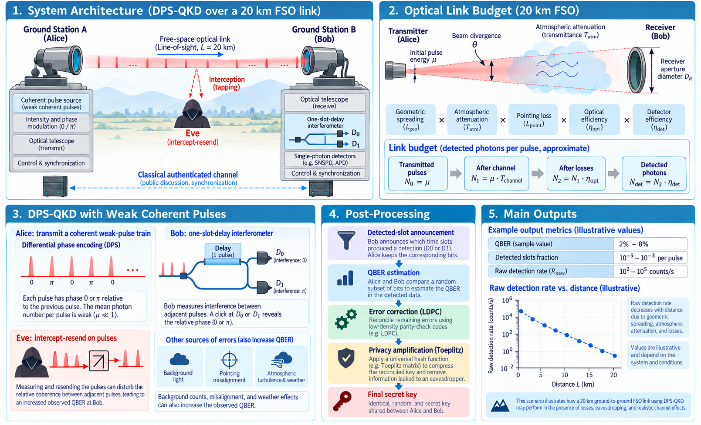
From Source Probabilities to Detected Events
The source probabilities tell us what Alice emits. Bob sees only a fraction of those photons because the optical path, receiver and detector are imperfect.
Let be the overall transmission-and-detection efficiency. For the one-photon source class, the detected signal probability is modeled as:
Using and :
So only about 0.0447% of gates contain a detected event from the one-photon source class at this operating point.
For the multi-photon source class, the simple approximation used here is:
For the same values:
Now include dark/background events. The input is the probability that one detector generates a dark click in one gate. With two independent detectors, the probability that at least one dark click occurs is:
For a daylight study, separate the detector's intrinsic dark-event probability from the light-background event probability per detector per gate. If the two are independent, enter their combined probability as
The approximation on the right is valid when both the intrinsic dark-event and light-background probabilities are small.
The baseline below uses , so its is intrinsic dark noise only. A measured daytime would depend on optical bandwidth, field of view, gate width, ambient radiance and filtering; this study does not derive it from solar irradiance.
With :
We now have three event classes for the QBER calculation: one-photon signal detections, approximate multi-photon detections, and dark/background events.
Detected single-photon, approximate multiphoton and dark terms
The two-detector dark union is calculated once. Single-photon and approximate multiphoton contributions are then multiplied by the total link efficiency.
Example calculation
Detected-event probabilities
P_dark = 3.999996000e-06
P_signal = 4.467074398e-04
P_multi approx = 3.524296180e-05
Total event probability = 4.859503976e-04
Device-Error Probability
Even when a real signal photon reaches Bob, the receiver can assign the wrong bit because of imperfect interference, phase drift, timing uncertainty, polarization effects or detector afterpulsing. Afterpulsing can matter for avalanche photodiodes, but its contribution depends on detector technology, count history and hold-off time; it is not universally the dominant QBER source.
We combine these contributions as:
Here is only a placeholder error allowance, not an afterpulse probability or a time-correlated detector model. The pulse clock converts per-gate values into rates without a dead-time correction. A hardware prediction needs detector-specific afterpulse and recovery measurements; simply adding a measured to would generally be incorrect.
The visibility contribution is:
For :
So a visibility of 98% contributes a 1% error term in this model.
For Gaussian phase fluctuations with standard deviation :
With rad:
In the baseline example, jitter, polarization and afterpulse contributions are initially set to zero so that the arithmetic remains easy to follow. Therefore:
Physical interferometer visibility must satisfy:
Device-error budget
Visibility and phase-noise contributions are evaluated separately. Additional jitter, polarization and afterpulse QBER allowances are zero in this calculation.
Example calculation
Device-error components
e_visibility = 0.010000000
e_phase = 0.000399840
e_jitter = 0.000000000
e_polarization = 0.000000000
e_afterpulse = 0.000000000
e_device total = 0.010399840 (1.040%)
DPS Bit QBER
The modeled bit-error rate is the probability of error events divided by the total probability of relevant detection events:
The numerator contains three error contributions:
• : dark/background events are random, so half are expected to have the wrong bit value;
• : a fraction of legitimate signal detections are wrong because of receiver imperfections;
• : this simplified model assigns a 25% error contribution to the multi-photon class.
For the current operating point:
Dividing the total error probability by the total event probability gives approximately:
This compact calculation is intentionally kept separate from the earlier two-detector click model because the assumptions are not identical.
Assemble the compact bit-error numerator
The dark, single-photon and multiphoton error terms are added and divided by the compact detection denominator. This gives the modeled bit QBER, distinct from physical click-conditioned QBER.
Example calculation
DPS QBER calculation
Dark error contribution = 1.999998000e-06
Signal error contribution = 4.645685919e-06
Multi error contribution = 8.810740451e-06
Error numerator = 1.545642437e-05
Event denominator = 4.859503976e-04
Q_bit = 0.031806589 = 3.181%
Yield and Photon-Number Gain
A yield answers the question:
If Alice emitted exactly photons, what is the probability that Bob registers a detection?
For a vacuum pulse, the only event in this simplified model is a dark/background detection:
For photons:
This is easy to interpret. Each photon independently has probability of being detected. The probability that none of the photons is detected is , so the probability of at least one detection is its complement.
For example, if :
A pulse with more photons therefore has more chances to trigger a threshold detector.
The Poisson probability of emitting photons is:
The gain of the -photon class is:
This combines two probabilities:
Alice emits an -photon pulse;
Bob detects it.
The main gain classes are:
and
The multi-photon sum can be evaluated efficiently as:
For the current sample point:
This exact multi-photon gain is larger than the simple approximation because a pulse containing two or more photons has multiple chances to cause a detection.
The table evaluates n = 0 through 8 using the photon-number probability, yield and their product. The summed multiphoton gain is compared with its closed form and with the separate simplified multiphoton approximation.
Example calculation
Photon-number gains and closed-form comparison
Table 11. Photon-number gains and closed-form comparison
| n | Photon probability | Yield | Photon-number gain |
|---|---|---|---|
| 0 | 8.607079764e-01 | 3.999996000e-06 | 3.442828463e-06 |
| 1 | 1.291061965e-01 | 3.460000000e-03 | 4.467074398e-04 |
| 2 | 9.682964735e-03 | 6.908028400e-03 | 6.689019538e-05 |
| 3 | 4.841482367e-04 | 1.034412662e-02 | 5.008090665e-06 |
| 4 | 1.815555888e-05 | 1.376833594e-02 | 2.499718339e-07 |
| 5 | 5.446667663e-07 | 1.718069750e-02 | 9.357754951e-09 |
| 6 | 1.361666916e-08 | 2.058125229e-02 | 2.802481033e-10 |
| 7 | 2.917857677e-10 | 2.397004115e-02 | 6.994116860e-12 |
| 8 | 5.470983144e-12 | 2.734710481e-02 | 1.496155495e-13 |
Closed-form gains
G0 = 3.442828463e-06
G1 = 4.467074398e-04
G>=2 exact = 7.215790303e-05
G total = 5.223081713e-04
G>=2 sum n=2..8 = 7.215790303e-05
Simple P_multi approximation = 3.524296180e-05
Phase-Error Proxy
For the modeled SKR calculation, we also build a phase-error proxy from the vacuum, one-photon and multi-photon gain classes:
where:
The terms have the following interpretation:
Vacuum/background events are treated as random and weighted by ;
The one-photon class uses the modeled bit error ;
The multi-photon class is weighted by in this teaching model.
For the current operating point:
This is a model quantity used inside the rate calculation. It is not a complete finite-key phase-error bound for a deployed DPS system.
The 1/4 weighting assigned to the multiphoton class and the resulting phase-error proxy are modeling assumptions adopted for the comparative engineering proxy in this project; they are not presented as a protocol security bound derived from a complete DPS-QKD security proof.
Assemble the phase-error proxy
Vacuum, single-photon and multiphoton contributions are pooled using the total compact gain. This is the phase-error quantity adopted by the teaching rate formula.
Example calculation
Phase-error proxy
0.5*G0 = 1.721414231e-06
G1*Q_bit = 1.420823976e-05
0.25*G>=2 = 1.803947576e-05
G total = 5.223081713e-04
Q_phase = 0.065036566 = 6.504%
Binary Entropy and Modeled SKR
The binary entropy function is:
It converts an error probability into an information penalty. A perfectly predictable binary variable has entropy 0, while a completely random binary variable with probability 0.5 has entropy 1 bit.
The modeled per-gate key-rate proxy is:
The two main terms are:
Privacy term: ,
Error-correction cost: .
The factor represents practical error correction being less efficient than the Shannon limit.
If the expression becomes negative, this study clips it to zero because a negative usable key rate has no physical meaning.
For the current operating point:
At a 10 MHz usable-gate rate:
This value is used as a performance proxy in the later FSO and satellite studies.
Entropy and modeled-rate evaluation
Binary entropy is evaluated with continuous endpoint handling. The privacy contribution and reconciliation penalty are shown separately before the factor one half and zero clipping are applied.
Example calculation
Modeled SKR proxy
h2(Q_phase) = 0.347121921
h2(Q_bit) = 0.203372434
privacy term = 2.916454952e-04
EC cost term = 1.232187775e-04
unclipped rate = 8.421335886e-05 modeled bits/gate
clipped rate = 8.421335886e-05 modeled bits/gate
at 10 MHz = 842.1 modeled bit/s
Reusable DPS QBER/SKR Function
The next function does not introduce new physics. It simply packages the calculations above so that later sections can pass arrays of , or visibility values and efficiently generate QBER and modeled-rate curves.
The function returns intermediate quantities as well as the final outputs so the calculation remains easy to inspect.
Reusable compact-model function
The implementation broadcasts efficiency and source/device inputs, forms all photon-number terms, and returns bit QBER, phase proxy, component gains, total gain and modeled rate per gate. The function is the shared numerical definition for later studies.
Example calculation
Reusable function check at the same example point
qber 0.0318065886
phase_proxy 0.0650365658
gain 0.000522308171
rate_per_gate 8.42133589e-05
Approximate and Exact Multi-Photon Detection
Earlier we used the simple approximation:
This treats every multi-photon pulse as though it had only one opportunity to be detected.
A more explicit threshold-detector model uses:
so an -photon pulse has multiple opportunities to trigger the detector.
The difference is small when both and are very small, but it becomes more visible as either quantity increases.
The next plot compares:
The exact multi-photon gain,
The simple approximate multi-photon term,
The earlier two-detector click QBER,
The compact DPS QBER/SKR model.
The two QBER curves do not need to be identical because they were built from different assumptions.
Check the multiphoton approximation
The comparison varies mean photon number and total efficiency. The exact signal multiphoton gain used in the gain partition need not equal the approximation used in the compact bit-error numerator.
Example calculation
eta=0.00346: at mu=0.5 exact G>=2 = 0.000679, simple approximation = 0.000312
eta=0.1: at mu=0.5 exact G>=2 = 0.018444, simple approximation = 0.009020

Free-Space Optical Channel Model¶↑ Contents
We now connect the DPS receiver model to the free-space optical (FSO) channel model used for the terrestrial study.
The calculation follows this chain:
distance -> beam radius -> geometric collection -> atmospheric transmission ->
pointing/device losses -> total efficiency -> DPS QBER and modeled SKR
For the 20 km baseline we use:
Table 12. Baseline 20 km terrestrial FSO parameters.
| Parameter | Value |
|---|---|
| Distance | 20 km |
| Initial beam radius | 0.05 m |
| Beam divergence | 50 microrad |
| Receiver radius | 0.10 m |
| Atmospheric attenuation | 0.1 dB/km |
| Pointing loss | 1 dB |
| Receiver optics efficiency | 0.7 |
| Detector efficiency | 0.5 |
| DPS mean photons | 0.15 |
These are editable educational assumptions, not measured Bahrain-KSA weather or hardware data.
Beam Expansion and Geometric Collection¶↑ Contents
We use a centered Gaussian-beam approximation:
In this report, w(L) denotes the 1/e^2 intensity radius of the Gaussian beam at propagation distance L.
At m:
so
For a centered circular receiver of radius , the collected power fraction is:
With m:
So only about 1.98% of the Gaussian beam power is collected by this aperture in the simplified centered-beam model.
Geometric link calculation
The Gaussian beam radius and collection fraction are calculated first. Distance is converted to metres, divergence is a half-angle in radians, and aperture denotes receiver radius.
Example calculation
20 km beam and aperture calculation
theta*L = 1.000000 m
beam radius w(L) = 1.001249 m
receiver radius a = 0.100 m
geometric collection = 0.019752438 = 1.975%
Atmospheric, Pointing, Optical and Detector Losses¶↑ Contents
Atmospheric attenuation is expressed in dB/km. For coefficient and distance :
With dB/km and km:
The value of is a chosen nominal scenario, not one derived from local weather. An optional visibility-based Kim/Kruse estimate could supply an alternative , subject to wavelength and empirical-model validity; measured attenuation is preferable for a site-specific result.
Convert a dB loss to linear transmission using:
Therefore:
Similarly, a 1 dB pointing loss gives:
This fixed allowance approximates average tracking/pointing impairment; it is not a time-varying beam-wander simulation. In an optional jitter model, zero-mean independent Gaussian horizontal and vertical displacements with common standard deviation produce a Rayleigh-distributed radius . The received aperture coupling would then be evaluated at each , alongside the turbulence fade. If this is added, replace the fixed pointing allowance or calibrate it for other residual losses to avoid counting the same jitter twice.
The total efficiency is then:
For our values:
That means roughly 0.3465% of the transmitted optical-photon opportunity survives all modeled collection and device factors.
Complete the 20 km loss budget
Atmospheric, pointing, optical and detector factors are multiplied exactly once. The printed stepwise budget makes the distinction between geometric collection and total detection efficiency explicit.
Example calculation
20 km multiplicative loss budget
geometric collection eta_geo = 0.019752438
atmosphere: 2.0 dB -> 0.630957344
pointing: 1.0 dB -> 0.794328235
optics efficiency = 0.700
detector efficiency = 0.500
overall eta = 0.003464884 = 0.3465%
Terrestrial DPS-QKD Study¶↑ Contents
Feed the FSO Efficiency into the DPS Receiver¶↑ Contents
The link budget gives . The DPS model then uses:
as the mean detected signal photon number per gate.
For and :
We now calculate two different outputs:
Two-detector physical model: raw detection probability and click-conditioned QBER;
Compact DPS model: QBER and SKR proxy.
They need not match exactly because they make different approximations. Keeping both is useful for model comparison.
Calculate the 20 km operating point
The exact optical efficiency is passed independently to the physical two-detector model and compact DPS model. Their gains and QBER definitions remain separate.
Example calculation
20 km DPS example
lambda = mu*eta = 5.197326560e-04
physical-model gain/gate = 5.235955360e-04
physical-model raw detections/s = 5,236.0
physical-model QBER = 1.374%
modeled QBER = 3.180%
modeled proxy/gate = 8.434848888e-05
modeled proxy bit/s = 843.5

Sweep Distance Instead of Evaluating Only One Point¶↑ Contents
A single 20 km number does not show the trend. We therefore evaluate the same optical model from 1 km to 50 km.
For every distance the notebook recalculates:
Beam radius,
Geometric collection,
Atmospheric attenuation,
Total ,
Detector gain, and
Detector QBER.
The vertical line marks the 20 km example used above.
Ground distance sweep
A 250-point grid from 1 to 50 km illustrates changing raw detections and physical QBER at fixed source/device settings. The marker identifies the 20 km baseline.
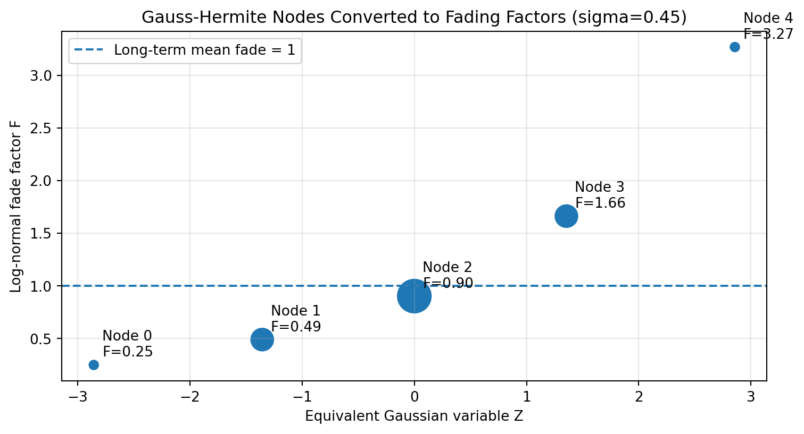
Distance, Visibility and Photon-Number Sweeps¶↑ Contents
Question 1: What happens if Alice changes ?
At very low , signal detections become scarce and dark/background events become more important. At larger , multi-photon terms grow. The model therefore has a parameter-dependent operating region rather than one universally optimal .
Question 2: What happens if interferometer visibility falls?
From
lower directly increases the device-error contribution and therefore increases QBER and reduces the modeled SKR proxy.
The following cell sweeps both effects. All values remain simulation outputs under the declared assumptions.
Intensity and visibility sensitivity
The plotted distance curves compare mu = 0.08, 0.15, 0.30 and 0.50. The printed visibility study isolates the effect of interferometer quality at the 20 km point.
Example calculation
Visibility sensitivity at 20 km, mu=0.15
V=0.900: QBER 6.86%, modeled SKR proxy 119 modeled bit/s
V=0.950: QBER 4.56%, modeled SKR proxy 551 modeled bit/s
V=0.980: QBER 3.18%, modeled SKR proxy 843 modeled bit/s
V=0.995: QBER 2.49%, modeled SKR proxy 1002 modeled bit/s

The logarithmic plot floors zero or very small rates at 0.01 for display only.
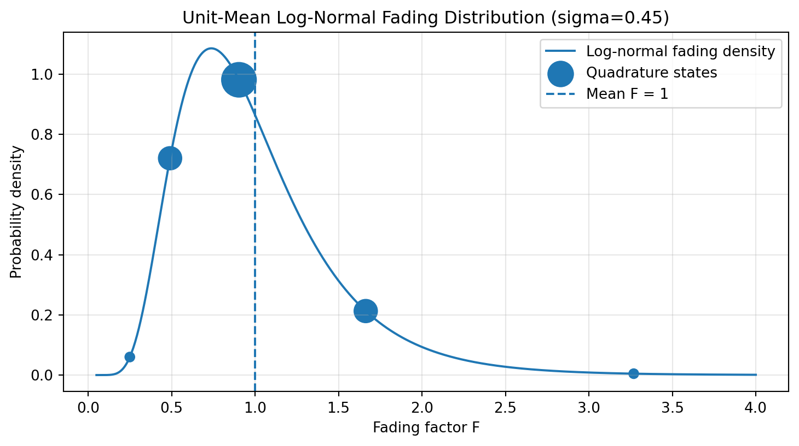
Atmospheric Turbulence and Fading¶↑ Contents
Independent Fading and Detection-Weighted Statistics¶↑ Contents
So far, was constant. A real FSO channel fluctuates with atmospheric turbulence.
As a first teaching step, let a positive random factor multiply the static 20 km efficiency:
We use a log-normal power factor:
The shift is chosen so that:
Therefore the turbulence factor changes the distribution of transmission without intentionally changing its mean before clipping.
Why QBER Must Be Detection-Weighted¶↑ Contents
Suppose one weak fade produces almost no detections but a high QBER, while a strong fade produces many detections and low QBER. Giving both time bins equal weight would not represent the error fraction among the actually detected bits.
The pooled QBER is therefore:
where is the detection probability in time bin .
Seed 8081 generates a small set of independently drawn log-normal power factors. Each is applied before recalculating detector gain and physical QBER. The two final error averages demonstrate the importance of detection weights.
Example calculation
Twelve-sample fading calculation
Table 13. Twelve-sample fading calculation
| Bin | Fade F | Total η | Detections/s | Physical QBER |
|---|---|---|---|---|
| 0 | 0.7321 | 2.536786e-03 | 3844.4 | 1.510% |
| 1 | 1.4180 | 4.913292e-03 | 7407.2 | 1.265% |
| 2 | 0.5226 | 1.810904e-03 | 2756.0 | 1.711% |
| 3 | 1.3960 | 4.836886e-03 | 7292.7 | 1.269% |
| 4 | 1.2687 | 4.395768e-03 | 6631.5 | 1.295% |
| 5 | 0.9330 | 3.232734e-03 | 4887.9 | 1.401% |
| 6 | 1.1199 | 3.880361e-03 | 5858.8 | 1.334% |
| 7 | 1.1323 | 3.923186e-03 | 5923.0 | 1.331% |
| 8 | 1.0133 | 3.510836e-03 | 5304.8 | 1.369% |
| 9 | 1.3199 | 4.573193e-03 | 6897.4 | 1.284% |
| 10 | 1.6491 | 5.713847e-03 | 8607.1 | 1.228% |
| 11 | 1.4560 | 5.044739e-03 | 7604.2 | 1.258% |
Arithmetic mean of per-bin QBER : 1.355%
Detection-weighted pooled QBER : 1.322%
Larger Fading Sample¶↑ Contents
The 12-row example explains the arithmetic. We now use 2,000 independent fading samples to obtain a smoother estimate.
This is still a toy fading experiment: it has no measured , weather series, scintillation spectrum or temporal correlation.
Two-thousand-sample fading calculation
An independent seeded sample gives a smoother view of efficiency and QBER distributions. This marginal fading experiment has no temporal correlation.
Example calculation
Average raw detections/s with fading: 5,298
Detection-weighted QBER: 1.37%
Mean fade factor before clipping: 1.0120
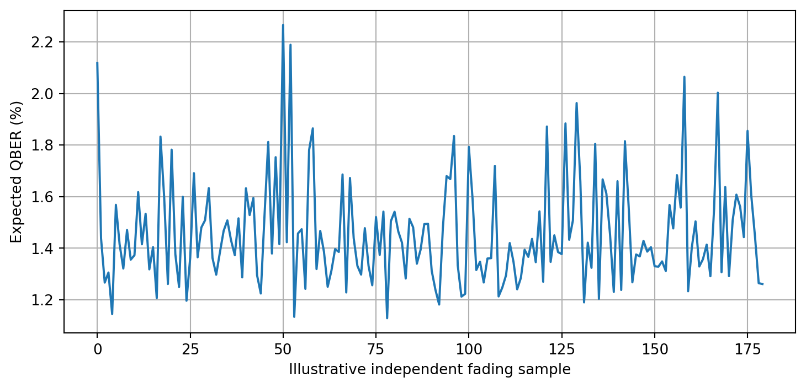
Log-Normal Turbulence and Gauss-Hermite Integration¶↑ Contents
Weak-to-moderate atmospheric turbulence can be represented with a multiplicative log-normal transmission factor. The static FSO efficiency is multiplied by a random turbulence term. The random factor below represents turbulence alone; the separate 1 dB pointing term remains fixed in the baseline.
We transfer the channel distribution only into the DPS simulation:
with
For every possible fade, we recompute the DPS detector and DPS equations.
Gauss-Hermite Quadrature for Log-Normal Fading
Atmospheric turbulence causes the received optical power to fluctuate with time.
Instead of assuming one fixed channel efficiency,
we model the instantaneous efficiency as:
where:
is the FSO efficiency without turbulence
is a random multiplicative fading factor
For weak-to-moderate turbulence, is commonly represented by a log-normal random variable.
We define:
where:
and controls the strength of the fluctuations.
Why is included?
The factor
normalizes the fading distribution so that:
This is useful because the turbulence model then represents fluctuations around the existing static link budget rather than adding another average attenuation term.
For example, if:
and the instantaneous fade is:
then:
The received signal is temporarily weaker.
If instead:
then:
The instantaneous received signal is stronger than its long-term average.
Example with
For this study we use:
If , which represents the center of the underlying Gaussian distribution:
Notice that the central fading value is slightly below 1.
This follows from the asymmetry of the log-normal distribution.
A log-normal distribution is asymmetric. Many samples are below 1, while a smaller number of large positive fades pull the overall average back to:
Why do we need an average?
The DPS detector performance depends nonlinearly on channel efficiency.
For example:
and:
Since turbulence continuously changes , we need quantities such as:
rather than evaluating the detector only once at the average channel efficiency.
In principle:
Monte Carlo simulation estimates this integral by generating thousands of random fading samples.
Gauss-Hermite quadrature provides another approach: it replaces the continuous Gaussian distribution with a small number of carefully selected deterministic points.
Transforming the log-normal variable
Because:
with:
an expectation can be written as:
Gauss-Hermite quadrature is defined using the weighting function:
Using the substitution:
the expectation becomes approximately:
where:
Here:
are the Gauss-Hermite nodes
are the Gauss-Hermite weights
is the fading factor represented by that node
This explains the two apparently unusual terms in the Python code:
np.sqrt(2) * sigma * nodes
weights / np.sqrt(np.pi)
Each row shows a Hermite node, equivalent standard-normal coordinate, transformed fading factor, normalized weight and weighted contribution to the mean. The weights and unit-mean fading factor are checked.
Example calculation
Five-node quadrature worked table
Table 14. Five-node quadrature worked table
| Node | GH x | Equivalent Z | Fade F | Weight | Weight × F |
|---|---|---|---|---|---|
| 0 | -2.020183 | -2.856970 | 0.249852 | 0.011257411 | 0.002812687 |
| 1 | -0.958572 | -1.355626 | 0.491014 | 0.222075922 | 0.109042480 |
| 2 | 0.000000 | 0.000000 | 0.903707 | 0.533333333 | 0.481977108 |
| 3 | 0.958572 | 1.355626 | 1.663264 | 0.222075922 | 0.369370829 |
| 4 | 2.020183 | 2.856970 | 3.268681 | 0.011257411 | 0.036796885 |
Checks
Sum of normalized weights = 1.000000000
Weighted mean fade factor = 0.999999989
Expected theoretical mean = 1.000000000
48 nodes will later be used for the production calculation.
Visualizing the Gaussian Nodes
Before converting the nodes into atmospheric fading values, we can look at where they lie on the underlying standard-normal distribution.
The middle node represents the most important central region of the distribution.
The two outermost nodes represent rare extreme conditions and therefore receive very small quadrature weights.
Gaussian-node interpretation
The five deterministic integration points lie on the underlying standard-normal coordinate axis. They are not five equally likely atmospheric observations.
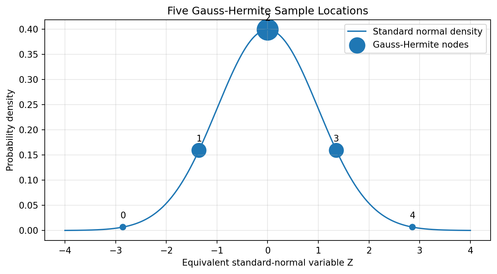
From Gaussian Position to Fading Factor
The Gaussian nodes are converted into atmospheric fading factors using:
Values:
represent weaker-than-average instantaneous transmission.
Values:
represent stronger-than-average instantaneous transmission.
The marker size in the following plot represents the quadrature weight.
Transform the Gaussian coordinates
The exponential map produces an asymmetric set of positive fading factors. Marker size indicates the quadrature weight.
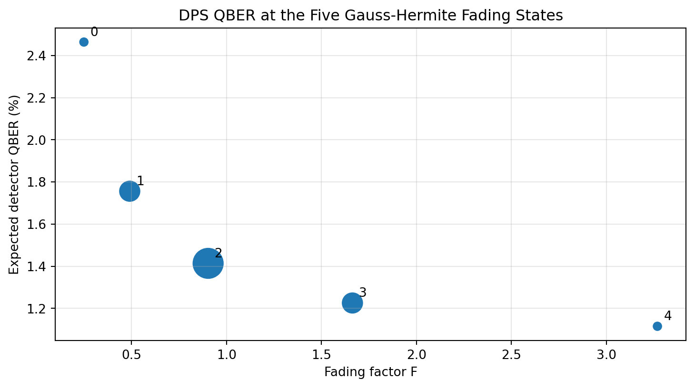
Weighted Contribution of Each Node
Gauss-Hermite quadrature does not simply average the five fading factors.
Each fading state is multiplied by its quadrature weight:
The expected fading factor is then:
For this example the result is almost exactly:
Sum the weighted fading contributions
Multiplying each fading state by its normalized weight reconstructs the expected unit-mean power factor.
Example calculation
Total contribution = 0.9999999893283253
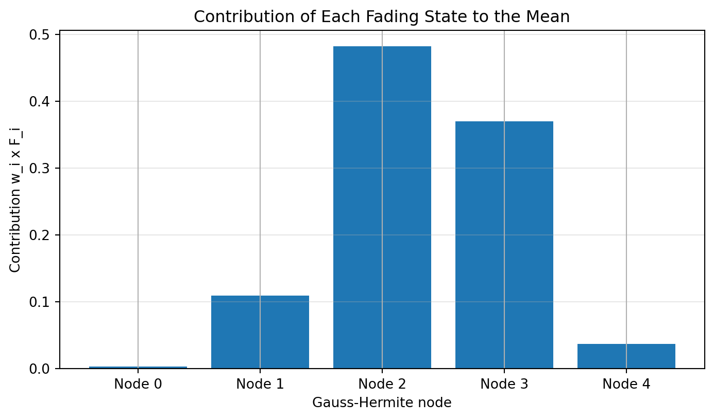
Log-Normal Fading Distribution
The same model can also be viewed directly in the fading domain.
The distribution is asymmetric:
Many fading states occur below
Strong positive fading values are less common
The long right-hand tail keeps the mean equal to 1
The Gauss-Hermite points provide a small deterministic representation of this continuous distribution.
Interpret the log-normal density
The central mass and right tail show why the median fading factor is below one while the mean is one.
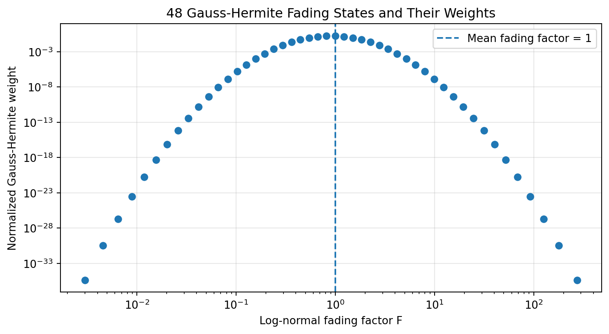
Convergence with Number of Gauss-Hermite Nodes
For the simple quantity , even a small number of Gauss-Hermite points provides a very accurate result.
However, the DPS model contains nonlinear quantities such as:
Detector click probability
QBER
Phase-error proxy
Modeled SKR
These functions can change strongly with transmission.
For that reason, the production calculation uses more quadrature nodes.
The following test shows how the calculated mean fading factor approaches its theoretical value of 1 as the quadrature order increases.
Quadrature-order convergence
The test increases node count and compares the estimated mean fading factor with its exact value. It tests a simple known moment before applying quadrature to the DPS response.
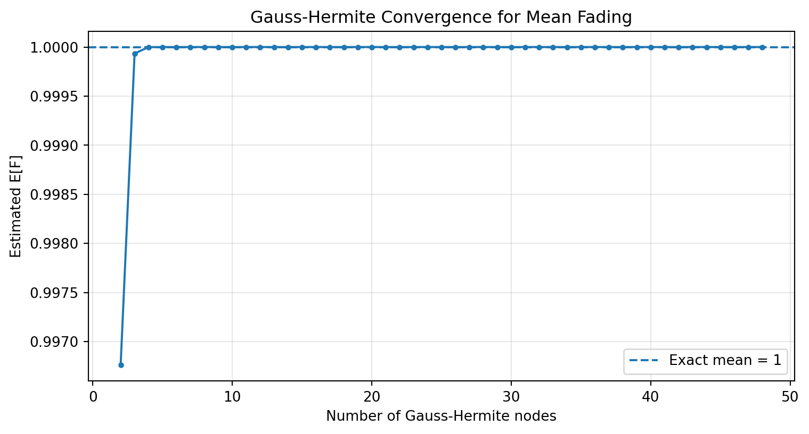
Absolute convergence error
The second convergence graph exposes small integration errors on a logarithmic scale.
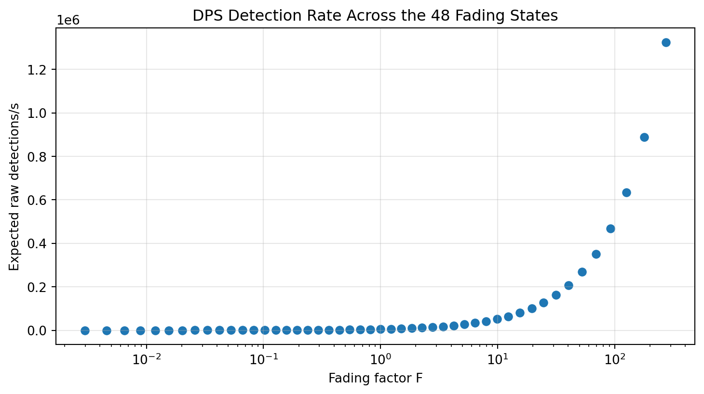
Applying the Five Fading States to the DPS Link
The purpose of Gauss-Hermite quadrature is not merely to reproduce the average fading factor.
For every fading state, the complete DPS channel model is recalculated.
At quadrature node :
The DPS detector then calculates:
and:
This means that a weak fading state produces a lower received signal, while a strong fading state produces a larger detection probability.
Because the number of detections is different for each fading state, the overall QBER should not normally be calculated as a simple arithmetic average of the individual QBER values.
Instead, errors are pooled according to the number of detections:
This is equivalent to:
The following five-node example applies this idea directly to the 20 km DPS FSO link.
At each node, the current total efficiency produces its own physical gain and QBER and compact modeled rate. The reported integrated physical QBER weights errors by detections.
Example calculation
Apply all five states to the detector and rate model
Table 15. Apply all five states to the detector and rate model
| Node | Weight | Fade F | Total η | Physical gain | QBER | Modeled bit/s |
|---|---|---|---|---|---|---|
| 0 | 0.011257 | 0.2499 | 8.657083e-04 | 1.338473e-04 | 2.464% | 130.2 |
| 1 | 0.222076 | 0.4910 | 1.701308e-03 | 2.591626e-04 | 1.756% | 357.1 |
| 2 | 0.533333 | 0.9037 | 3.131241e-03 | 4.735739e-04 | 1.414% | 751.2 |
| 3 | 0.222076 | 1.6633 | 5.763017e-03 | 8.680755e-04 | 1.226% | 1480.3 |
| 4 | 0.011257 | 3.2687 | 1.132560e-02 | 1.701391e-03 | 1.115% | 3025.7 |
Five-node integrated result
Mean detector gain = 5.23565236e-04
Pooled QBER = 1.374%
Physical QBER across the five states
Weak states raise the relative dark-count contribution, whereas strong states approach the optical-error floor.

This is physical click-conditioned QBER, not the compact modeled QBER.
Modeled rate across the five states
The compact rate is recomputed at every state before any averaging. This curve illustrates its nonlinear response to received signal.

Modeled rates and phase errors are engineering proxies under the stated compact model.
Accurate Turbulence Integration with 48 Gauss-Hermite Nodes
In earlier sections we used only five Gauss-Hermite nodes so that every fading state and weight could be inspected manually. We now use 48 nodes for the numerical turbulence calculation.
The value 48 has no special physical meaning. It is simply a sufficiently high quadrature order for this smooth weak-to-moderate log-normal example while remaining computationally inexpensive.
For each quadrature node :
and the instantaneous channel efficiency is:
The cap at 1 enforces the physical requirement that total efficiency cannot exceed 100%.
The production calculation therefore follows this chain:
Gauss-Hermite node -> fading factor -> instantaneous eta -> DPS detector -> gain/QBER/rate -> weighted average
The important point is that we do not replace turbulence by one average fading number. Detector gain, QBER, binary entropy, and the modeled rate are nonlinear functions of transmission. In general:
So the nonlinear DPS model is evaluated at every quadrature state before the results are combined.
Construct the production 48-node grid
Normalized weights sum to one. Extreme transformed factors receive vanishingly small weights and must not be interpreted as typical weather samples.
Example calculation
48-node Gauss-Hermite integration grid
Number of nodes : 48
Sum of normalized weights : 1.0
Weighted mean fading factor : 1.0000000000000002Fading range represented by quadrature:
Minimum fade factor : 0.002988135866742993
Maximum fade factor : 273.309688387189Extreme-node weights:
Lowest-node weight : 4.4771554738758594e-36
Highest-node weight : 4.4771554738758594e-36
Inspecting Representative Quadrature Nodes
A 48-node calculation contains many points, so the next table prints a representative subset from the low tail, central region, and high tail.
Some quadrature nodes lie extremely far into the mathematical tails of the Gaussian distribution. For , the most extreme transformed fading factors can be very small or very large. These are integration points, not equally probable atmospheric measurements.
Their weights can be as small as roughly , so the extreme states contribute essentially nothing to the final expectation. A fading value should therefore never be interpreted without its quadrature weight.
The printed subset spans the far tails and central nodes so both the transformed factor and its probability weight can be inspected.
Example calculation
Inspect representative integration states
Table 16. Inspect representative integration states
| Node | GH x | Equivalent Z | Fade F | Weight |
|---|---|---|---|---|
| 0 | -8.97532 | -12.69301 | 0.002988 | 4.477155e-36 |
| 8 | -5.19629 | -7.34866 | 0.033102 | 3.975806e-13 |
| 16 | -2.41676 | -3.41782 | 0.194122 | 5.395866e-04 |
| 20 | -1.11881 | -1.58224 | 0.443411 | 5.180518e-02 |
| 23 | -0.15949 | -0.22556 | 0.816482 | 1.754635e-01 |
| 24 | 0.15949 | 0.22556 | 1.000251 | 1.754635e-01 |
| 27 | 1.11881 | 1.58224 | 1.841826 | 5.180518e-02 |
| 31 | 2.41676 | 3.41782 | 4.207073 | 5.395866e-04 |
| 39 | 5.19629 | 7.34866 | 24.671464 | 3.975806e-13 |
| 47 | 8.97532 | 12.69301 | 273.309688 | 4.477155e-36 |
Weight Carried by the 48 Fading States
The normalized quadrature weights satisfy:
The graph below uses a logarithmic horizontal axis because the transformed fading factors span several orders of magnitude. The central fading region carries almost all the numerical weight, while the extreme tails carry vanishingly small weight.
Visualize the 48 weights
The logarithmic fading axis resolves the wide range of transformed integration factors.

Converting Fading into Instantaneous Link Efficiency
The static 20 km FSO link has an efficiency close to:
Turbulence multiplies this value by each fading state:
For example, if :
If :
Because the log-normal model is normalized so that , the weighted mean efficiency remains close to the original static efficiency unless the physical cap becomes relevant.
Convert factors to total efficiencies
The cap at total efficiency one is applied per state. Minimum, maximum and weighted mean values are printed.
Example calculation
20 km static efficiency : 0.0034648843733626287
Weighted mean effective efficiency: 0.003464884373362629
Static efficiency: 0.0034648843733626287
Efficiency at each state
The graph makes the nonlinear exponential transform and physical efficiency cap visible.
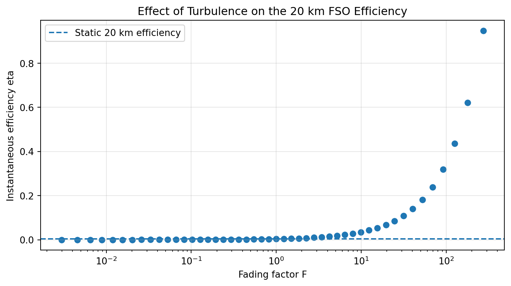
DPS Detector Response at Every Fading State
For each instantaneous efficiency, the two-detector DPS model is recalculated:
Here:
is the probability that at least one detector clicks in a usable gate;
is the click-conditioned detector QBER;
is the expected raw detection rate.
During a deep fade, legitimate signal detections become scarce while the dark-count probability remains approximately unchanged. Therefore the raw detection rate falls and dark counts make up a larger fraction of the detections, pushing QBER upward.
During a favorable fade, legitimate signal detections dominate and QBER approaches the intrinsic optical-error floor.
The selected rows show how raw detections and physical QBER change with efficiency while retaining each node’s integration weight.
Example calculation
Physical response at representative states
Table 17. Physical response at representative states
| Node | Fade F | Total η | Weight | Detections/s | Physical QBER |
|---|---|---|---|---|---|
| 0 | 0.0030 | 1.035355e-05 | 4.477e-36 | 55.5 | 36.296% |
| 8 | 0.0331 | 1.146962e-04 | 3.976e-13 | 212.0 | 10.243% |
| 16 | 0.1941 | 6.726111e-04 | 5.396e-04 | 1048.9 | 2.869% |
| 20 | 0.4434 | 1.536369e-03 | 5.181e-02 | 2344.3 | 1.836% |
| 23 | 0.8165 | 2.829015e-03 | 1.755e-01 | 4282.6 | 1.458% |
| 24 | 1.0003 | 3.465753e-03 | 1.755e-01 | 5237.3 | 1.374% |
| 27 | 1.8418 | 6.381716e-03 | 5.181e-02 | 9608.0 | 1.204% |
| 31 | 4.2071 | 1.457702e-02 | 5.396e-04 | 21881.6 | 1.089% |
| 39 | 24.6715 | 8.548377e-02 | 3.976e-13 | 127446.6 | 1.015% |
| 47 | 273.3097 | 9.469865e-01 | 4.477e-36 | 1324238.3 | 1.003% |
Detector gain response
This is physical probability of at least one click per usable gate.

Detector QBER response
The physical error fraction approaches background domination at very low received signal.
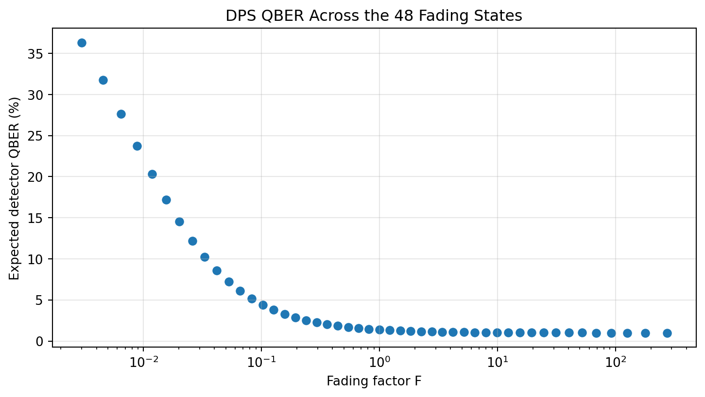
Detection-Weighted QBER
A simple average of the individual QBER values is not the correct way to combine a fading channel because different fading states produce different numbers of detections.
For node :
is its expected contribution to total detections, while:
is its expected contribution to erroneous detections.
Therefore:
and the pooled QBER is:
Small example: if one state produces 1,000 detections at 2% QBER and another produces only 100 detections at 10% QBER, the arithmetic average is 6%, but the actual pooled result is:
The study therefore reports both the simple weighted average for comparison and the physically more meaningful detection-weighted pooled QBER.
Pool detections and errors
The calculation separately accumulates weighted total detections and weighted erroneous detections. Their ratio defines pooled physical QBER.
Example calculation
48-node physical detector integration
Expected gain per gate = 5.235652399e-04
Expected raw detections/s = 5,235.7
Simple weighted mean QBER = 1.457%
Detection-weighted pooled QBER = 1.374%
Contribution to total detections
This graph identifies which fading states dominate the pooled detector count.
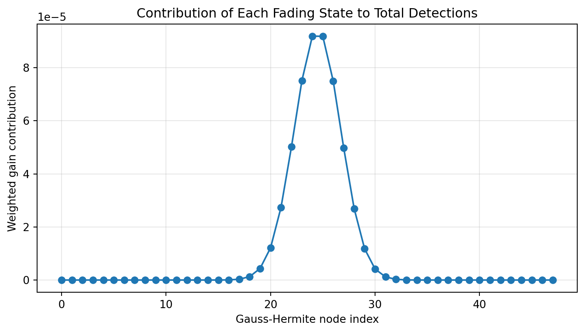
Contribution to erroneous detections
Error-count weights need not peak at the same positions as simple node weights.
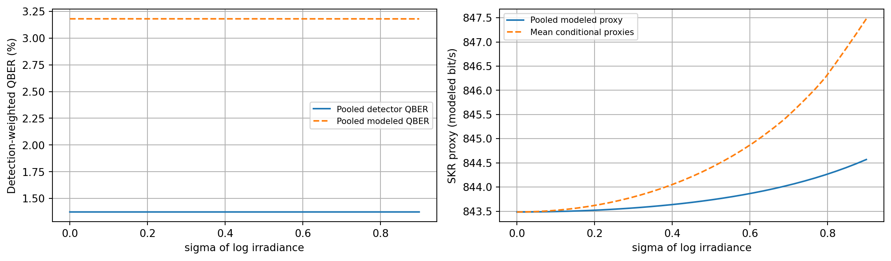
Compare normalized detection and error contributions
The two normalized distributions explain why pooled QBER differs from an arithmetic mean of node percentages.
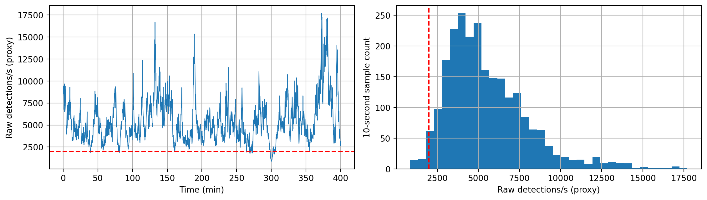
The physical click model above evaluates detector gain and click-conditioned QBER. The notebook also carries the compact DPS model introduced earlier.
At every fading state it evaluates:
The total and single-photon gains are averaged directly:
The bit-error and phase-error quantities are pooled by detected gain:
Those pooled quantities are then inserted into the same educational modeled-rate expression used in earlier sections. The result remains a modeled performance proxy, not a complete finite-key security proof.
Pool the compact model
The compact model is evaluated independently at the same 48 efficiencies. Its own gains weight its bit and phase error proxies before evaluating the pooled rate.
Example calculation
48-node compact DPS integration
Mean total gain = 5.230101506e-04
Mean single-photon gain = 4.473380426e-04
Pooled modeled QBER = 3.180%
Pooled phase-error proxy = 6.501%
Pooled modeled rate = 843.7 modeled bit/s
Mean per-fade modeled rate = 844.2 modeled bit/s
Compact bit-QBER response
This follows the photon-number approximation rather than the physical correct/wrong-port formula.
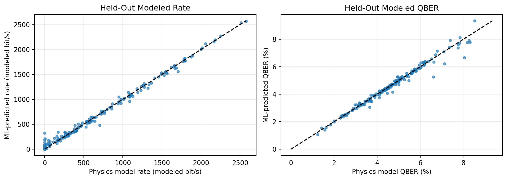
Phase-error response
The plotted quantity is the compact model’s phase-error proxy.
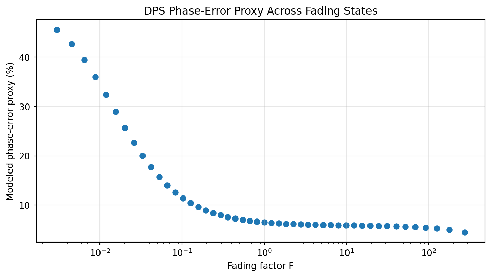
Conditional modeled rate
Every fading state has an individually evaluated and zero-clipped rate; its weighted mean is distinct from the rate of pooled statistics.

Pooled Rate versus Mean Per-Fade Rate
There are two different ways to summarize the modeled rate over turbulence.
Pooled processing: accumulate gains and error statistics across all fading states first, then calculate one modeled rate.
Per-fade processing: calculate a modeled rate for each fading state first and then average:
Because the entropy terms and zero-clipping are nonlinear, the two results need not be identical:
For the present weak-turbulence operating point they are expected to be close; stronger fading or different parameters can increase the difference.
Compare pooled and conditional rate processing
The small difference at the baseline arises because entropy and zero clipping are nonlinear operations.
Example calculation
Rate averaging comparison
Pooled modeled rate = 843.7 modeled bit/s
Mean per-fade modeled rate = 844.2 modeled bit/s
Difference = 0.532 modeled bit/s
Reusable 48-Node Turbulence Function
The preceding cells deliberately expose every intermediate quantity. Later sections need the same calculation repeatedly, so the complete quadrature procedure is packaged into fading_moments().
The function accepts the static efficiency, mean photon number, turbulence strength, visibility, dark-count probability, and error-correction efficiency. It returns the averaged physical detector statistics and both modeled-rate summaries.
No new physics is introduced by the function; it only automates the calculation demonstrated above.
Reusable turbulence algorithm
fading_moments broadcasts the input arrays across 48 Hermite states, applies clipped efficiencies, evaluates both receiver models, averages gains and weighted error numerators, and returns physical statistics plus pooled and mean-conditional modeled rates.
km Turbulence-Averaged Example
We now apply the reusable integrator to the same 20 km ground link using:
The output reports the long-term physical detector gain, detection-weighted QBER, pooled compact-model QBER, pooled phase-error proxy, and the two modeled-rate summaries.
Complete 20 km turbulence result
The function reports the physical detector statistics and compact pooled statistics separately at mu = 0.15 and log-irradiance sigma = 0.45.
Example calculation
20 km DPS link with log-normal fading, sigma=0.45
Average physical gain/gate = 5.235652399e-04
Average raw detections/s = 5,235.7
Detection-weighted click QBER = 1.374%
Pooled modeled QBER = 3.180%
Pooled phase-error proxy = 6.501%
Pooled modeled rate proxy = 843.7 modeled bit/s
Mean per-fade modeled rate proxy = 844.2 modeled bit/s
Sanity Check: Zero Turbulence Must Recover the Fixed Link
If:
then every log-normal fading factor becomes exactly 1. The quadrature calculation must therefore reproduce the fixed 20 km channel.
The next cell checks this explicitly with numerical assertions. If either assertion fails, the turbulence implementation is inconsistent with the fixed-link model.
Zero-turbulence consistency assertions
At sigma zero, all factors become one. The asserted gain and rate agreement verify recovery of the fixed-link calculation.
Example calculation
No-turbulence sanity check
Fixed-link gain: 5.235955360e-04
Quadrature gain: 5.235955360e-04
Fixed-link QBER: 1.374237%
Quadrature QBER: 1.374237%
Fixed Link versus Turbulence-Averaged Link
A useful final check is to place the fixed-link result and the turbulence-averaged result side by side.
Because the fading factor has unit mean, the long-term average can remain close to the fixed-link result even though the instantaneous link fluctuates strongly. This does not mean turbulence is irrelevant: temporary deep fades can still create low detection rate, high QBER, and operational outage periods.
Fixed and fading results side by side
The baseline averages are close, while individual fades can still cause low-rate and high-QBER intervals.
Example calculation
Table 18. Fixed-link and turbulence-averaged results
| Quantity | Fixed link | σlog = 0.45 |
|---|---|---|
| Physical gain/gate | 5.235955360e-04 | 5.235652399e-04 |
| Raw detections/s | 5,236.0 | 5,235.7 |
| Physical detector QBER | 1.374% | 1.374% |
| Modeled DPS QBER | 3.180% | 3.180% |
| Phase-error proxy | 6.503% | 6.501% |
| Modeled rate proxy (bit/s) | 843.5 | 843.7 |
Interpretation of the 48-Node Result
The 48-node calculation shows four important ideas.
First, the log-normal model is normalized so that:
Second, instantaneous conditions still vary strongly. During a deep fade:
During a favorable fade:
Third, QBER must be combined according to the number of detections, not by treating every fading state as equally important.
Finally, a long-term mean close to the fixed-link result does not imply that turbulence has no operational effect. Time-varying fading can still produce temporary high-QBER intervals, bursty key generation, and outages.
Validate Quadrature with an Independent Monte Carlo Simulation
A numerical integration method should be checked against a second method.
We therefore generate 100,000 independent log-normal fades using a separate seeded random generator and compare:
Mean detector gain,
Detection-weighted QBER.
Small differences are expected because Monte Carlo has finite-sample noise. The assertions allow a modest tolerance rather than requiring bit-for-bit equality.
After validation, we sweep from 0 to 0.9 to show how increasing turbulence changes the pooled quantities.
Independent Monte Carlo validation
One hundred thousand independent fades at seed 913 test physical gain and pooled physical QBER. The allowed relative gain tolerance is 2%, and absolute QBER tolerance is 0.002. A separate sweep varies log-irradiance sigma from zero to 0.9.
Example calculation
Quadrature gain = 0.0005235652; Monte Carlo gain = 0.0005226168
Quadrature QBER = 1.374%; Monte Carlo QBER = 1.375%
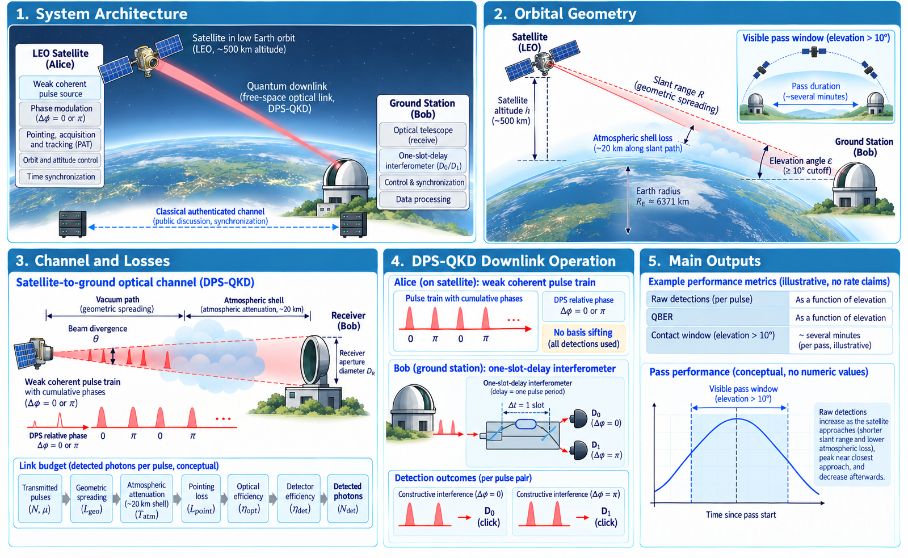
Turbulence strength: pooled QBER and two rate summaries
Long-Time Correlated Fades and Outage
The log-normal model above describes the marginal distribution of transmission, but independent samples jump unrealistically from one fade to another. To demonstrate slowly varying conditions, we add an explicit AR(1) Gaussian process:
where .
We then convert the correlated Gaussian variable to a unit-mean log-normal factor:
and
For this teaching experiment:
controls fade strength,
gives strong correlation between adjacent samples,
Samples are interpreted every 10 seconds,
An engineering threshold of 2,000 raw detections/s defines an illustrative outage.
The 2,000/s threshold is not a QKD security threshold. It is only an availability criterion chosen for this example. The AR(1) correlation is an additional time-series assumption used only for this teaching experiment.
Generate the correlated process
The AR(1) process starts from a standard-normal draw and uses rho = 0.96. Seed 991 makes this NumPy realization reproducible.
Example calculation
First 12 correlated fade factors:
[1.6886 1.7082 1.8097 1.6365 1.7893 1.6451 1.5745 1.2942 1.4303 1.2451
1.578 1.6267]
Adjacent values tend to remain similar when rho is close to 1.
Sampled outage and long-time pooled QBER
There are 2,400 ten-second bins, interpreted as 400 minutes; timestamps run from zero to 399.833 minutes. Outage counts raw physical detections below 2,000/s. This definition differs from the current Octave modeled-bit-rate outage.
Example calculation
Study duration: 400 minutes
Fraction of 10-second sampled bins below 2,000 raw detections/s: 1.92%
Detection-weighted QBER over the study: 1.35%

ML-Assisted DPS-FSO Optimization: Physics, QBER and Modeled SKR¶↑ Contents
This section follows Section 12 of Jupyter notebook. The physics model remains authoritative: the RBF surrogate learns numerical simulator outputs, searches candidate designs, and proposes operating points; it cannot improve the underlying physical equations or provide a DPS security proof. The experiment compares approaches under equal budgets of physical model evaluations, reports actual runtime, and checks the selected ML candidates with physics.
Six-Parameter Physics Target and Modeled Key Accounting¶↑ Contents
The engineering feature vector has six components: mean photon number μ; receiver radius a; pointing/tracking loss Lpoint (dB); log-normal turbulence σlog; interferometer visibility V; and log10 of dark-click probability d. The study fixes link distance at 20 km with a 100 µrad beam divergence, 0.20 dB/km atmospheric attenuation, 0.50 optical transmission, 0.80 mode coupling, 0.50 interferometer transmission, 0.30 detection efficiency and a 10 MHz clock. Ground-model fading is integrated using 48 Gauss–Hermite nodes.
X = [ μ, a, Lpoint, σlog, V, log₁₀(d) ]
Table 19. Parameter ranges.
| Feature | Minimum | Maximum | Role |
|---|---|---|---|
| Mean photons μ | 0.05 | 0.50 | Source operating intensity / scenario input |
| Receiver radius a | 0.10 m | 0.25 m | Optical collection geometry |
| Pointing loss | 1.5 dB | 5.0 dB | Tracking/hardware scenario |
| Turbulence σlog | 0.15 | 0.65 | Environmental condition |
| Visibility V | 0.950 | 0.985 | Interferometer condition |
| Dark probability d | 10⁻⁶ | 10⁻⁵ | Detector/background scenario per gate |
For each candidate, the physics function computes the optical transmission, evaluates gain and detection-weighted QBER at every fading quadrature node and pools detection and error totals. Raw detection rate and modeled SKR are distinct outputs. ML is trained to predict raw detector rate and QBER; the modeled SKR is then calculated from the same post-processing function as the direct physics route.
Rraw = fclk × G ; h₂(Q) = −Q log₂(Q) − (1−Q) log₂(1−Q)
SKRmodel = Rraw × qDPS × max[0, 1 − 1.16 h₂(Q) − h₂(Q)] ; qDPS = 1
The two subtractions are generic asymptotic bookkeeping allowances for error-correction leakage and privacy amplification. These do not incorporate a DPS-specific bound on Eve’s information, a coherent-state intensity-dependent security theorem, finite-key effects, authentication costs or measured device leakage. Therefore SKRmodel is an illustrative engineering proxy, not a certified composably secure DPS key rate. QBER < 5% is an engineering feasibility filter only.
RBF Training and Independent Held-Out Validation¶↑ Contents
The notebook uses a two-output Gaussian radial-basis-function kernel-ridge surrogate with inputs scaled to the six-dimensional feature ranges. The target outputs are physical raw detector rate and pooled QBER; the SKR output is analytically derived. Training consists of 150 physics-labeled samples, while 100 independent physics evaluations are withheld for testing. The model uses length scale 0.55 and ridge regularization 0.0001; neither parameter is a universal optimum.
K(x,z) = exp[−||x−z||²/(2ℓ²)], ℓ = 0.55 ; (K + λI)W = Y, λ = 10⁻⁴
The independent validation includes parity plots for raw detector rate, modeled QBER and derived modeled SKR. Their residuals measure agreement with the simulated physics and do not establish predictive skill for field measurements. Prediction quality close to the 5% QBER cutoff requires specific attention because a small error can change a design’s feasibility classification.

Equal-Budget Direct Physics versus One-Million-Point ML Search¶↑ Contents
The experiment controls the expensive resource—physics-model evaluations—to exactly 300 per method. A direct-search baseline evaluates 300 candidates in the six-dimensional domain. The ML route uses 150 physics points for training, 100 separate physics points for accuracy assessment, screens 1,000,000 designs with the surrogate, and uses 50 further direct physics calls to recheck the highest-ranked predictions. Physically evaluated training/test designs may also compete for the best verified ML-route solution; therefore no ML-only unverified prediction is reported as the final winner.
Table 20. Simulation counts.
| Resource / phase | Direct physics | ML-assisted |
|---|---|---|
| Physics-only search | 300 | — |
| Physics labels for training | — | 150 |
| Independent physics holdout | — | 100 |
| Final physics verification | — | 50 |
| Total physics evaluations | 300 | 300 |
| Surrogate predictions | — | 1,000,000 |
Both paths maximize the same modeled SKR proxy, subject to the illustrative modeled-QBER constraint Q < 0.05. The one-million-candidate search uses batching to bound memory. The direct and surrogate searches use random numerical designs; a higher candidate count is not equivalent to a larger physics budget, and a single random seed cannot show general superiority.
The results from a representative Python simulation (Section 12) show that the conventional physics-based optimization achieved approximately 1,843 detector clicks/s, with a QBER of 1.405% and a modeled secret key rate of 1,419 bit/s. In comparison, the ML-assisted approach achieved approximately 2,502 detector clicks/s, with a QBER of 1.427% and a modeled secret key rate of 1,918 bit/s. This represents an improvement of approximately 35.2% in the modeled secret key rate for the tested scenario. However, the conventional physics-based approach required significantly less computation time. These results are based on a single simulation run and may vary with different random seeds, model settings and computational environments.
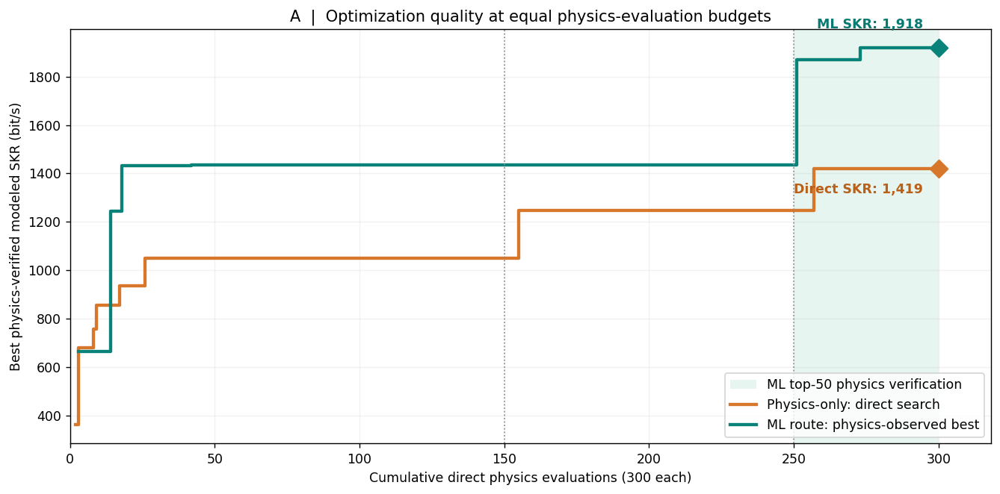
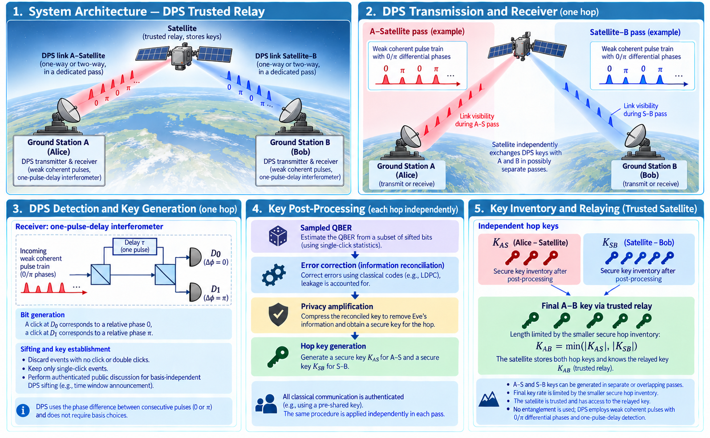
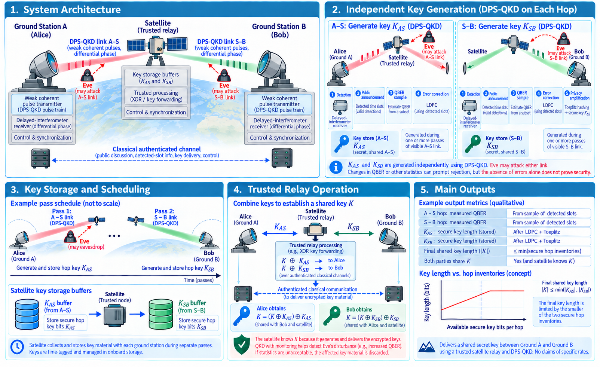
Conditional Six-Dimensional Slice and Raw-to-SKR Breakdown¶↑ Contents
A two-dimensional conditional heatmap varies μ and receiver radius while keeping the remaining four features fixed at the physics-verified ML-route design. Its color shows ML-predicted modeled SKR and its 5% QBER contour is surrogate-predicted. The direct-physics design is plotted by its μ and aperture coordinates only: because its other four parameters differ, the heatmap color at that projection must not be interpreted as its actual rate.
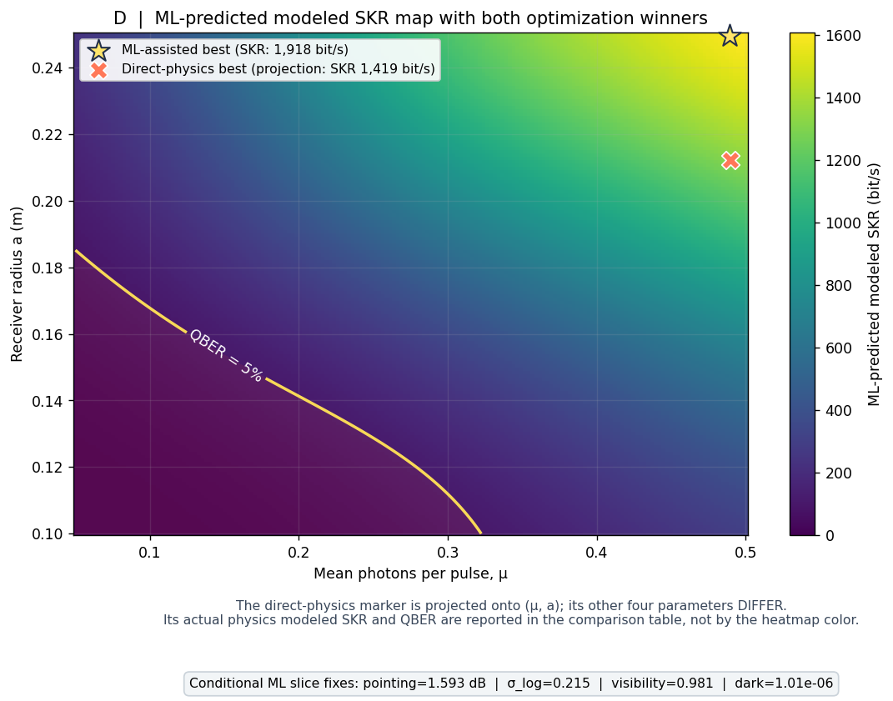
Raw detections and model SKR should not be conflated. Graph shows the two separately, with modeled reconciliation leakage and a generic privacy allowance; it must not be read as a directly proven DPS secret-key bound.

Scientific Interpretation and Reproducibility Limits¶↑ Contents
The main contribution of this study is the use of machine learning to identify improved DPS-QKD operating parameters within the same physics evaluation budget. In the recorded simulation, the ML-assisted approach evaluated a much larger number of candidate configurations using an RBF surrogate model and identified a design with a higher modeled secret key rate, which was subsequently verified using the physics model. However, the conventional physics-based approach was faster in terms of overall execution time because the analytical calculations were relatively simple. ML-assisted optimization may offer greater computational benefits in more complex simulations involving Monte Carlo methods or detailed security analysis, although this remains to be investigated.
The optimization considers six parameters, including source mean photon number, receiver aperture, atmospheric turbulence, interference visibility, background detection probability and pointing loss. Some of these parameters can be adjusted during system design, while others depend on environmental conditions or hardware characteristics. Therefore, the best-performing configuration obtained from the simulation represents a theoretical optimum within the selected parameter ranges rather than a configuration that can necessarily be achieved in a practical installation. Further evaluation using multiple simulation runs and fixed environmental conditions would help establish the consistency and practical applicability of the results.
The simulation framework has also been implemented in GNU Octave, using the same six input parameters and an RBF surrogate model that predicts detector rate and QBER. Both implementations calculate the modeled secret key rate from these outputs and use equivalent physics evaluation budgets, with 300 evaluations for direct optimization and 150 training, 100 validation and 50 verification evaluations for the ML-assisted approach. The ML model additionally evaluates one million candidate configurations through batched predictions. Although the Python and GNU Octave implementations follow the same mathematical assumptions, differences in random sampling and numerical execution may result in variations in the optimized values and computational time.
LEO Satellite-to-Ground DPS Downlink¶↑ Contents
We now replace the fixed 20 km horizontal link with a moving 500 km LEO satellite.
The model is intentionally simple so that each geometric effect can be followed:
Place the ground station on a spherical Earth,
Place the satellite on a circular 500 km orbit,
Move the satellite with constant angular rate,
Calculate satellite-ground slant range,
Calculate elevation angle,
Calculate how much of the ray lies inside a 20 km atmosphere shell,
Apply beam spreading over the full slant range,
Apply atmospheric loss only to the in-atmosphere path,
Close the link below 10 degrees elevation,
Calculate DPS gain, QBER and modeled SKR proxy.
Assumptions used here:
Table 21. LEO satellite-to-ground teaching-model assumptions.
| Parameter | Value |
|---|---|
| Earth radius | 6371 km |
| Satellite altitude | 500 km |
| Earth gravitational parameter | 398600.4418 km/s |
| Minimum elevation | 10 degrees |
| Atmospheric shell height | 20 km |
| Zenith atmospheric loss | 2 dB |
| Beam divergence | 10 microrad |
| Receiver radius | 0.5 m |
This is a planar overhead-pass teaching geometry. Earth rotation, orbital inclination, clouds, sunlight constraints and detailed pointing dynamics are omitted.
Circular-Orbit Angular Speed
The orbital radius is:
For a circular orbit, the angular rate is:
For the chosen values:
The corresponding orbital period is:
The satellite angle relative to the overhead point is then:
Calculate the circular-orbit motion
The angular speed and period follow from a 6,871 km orbital radius. The sampled time vector extends from -950 to +950 seconds in five-second steps.
Example calculation
Circular-orbit teaching model
orbital radius = 6871.0 km
angular rate omega = 1.108508340e-03 rad/s
orbital period = 94.47 min
time sampling = 5 s
Range, Elevation and Atmospheric Slant Path
The ground station and satellite are represented by 2-D position vectors.
For each time sample:
is the line-of-sight vector, and the slant range is:
The local vertical unit vector at the ground station is:
The elevation angle is obtained from the projection of the line of sight onto the local vertical:
For atmospheric attenuation we intersect the line of sight with a spherical shell of radius km. This produces the in-atmosphere path length.
At zenith:
Slant range = 500 km,
Elevation = 90 degrees,
In-atmosphere path = 20 km.
Near the 10 degree cutoff, the optical path through the 20 km-high atmosphere becomes much longer than 20 km.
Evaluate two geometric checkpoints
The zenith and near-cutoff cases distinguish full optical range from in-atmosphere slant length.
Example calculation
t= 0 s: range= 500.0 km, elevation= 90.00 deg, atmosphere path= 20.00 km
t=220 s: range= 1685.4 km, elevation= 10.14 deg, atmosphere path= 108.54 km
Convert Satellite Geometry into Optical Efficiency
Beam expansion uses the full satellite-ground range because diffraction occurs over the entire optical path.
Atmospheric attenuation is applied only to the path inside the 20 km atmospheric shell. If the zenith 20 km path has 2 dB loss, the simple scaled atmospheric loss is:
and
At zenith, km, so the loss is exactly 2 dB. Near the 10 degree elevation cutoff in this sampled pass, the atmospheric path exceeds 100 km and the simple scaled loss becomes more than 10 dB.
Below 10 degrees the receiver gate is treated as closed; even dark counts are excluded from the modeled contact because no key-acquisition window is open.
Calculate the physical downlink response
The elevation cutoff gates the raw count contribution. Under the discrete sample-count convention used by the code, 89 centered-pass samples above 10 degrees correspond to a sample-counted contact budget of 445 s; this should not be interpreted as an exact continuous-visibility duration.
Example calculation
Contact above 10 deg: 7.42 min
x
t= 0 s: elevation= 90.00 deg, eta=3.473e-03, raw detections/s=5,248, QBER=1.37%
t=220 s: elevation= 10.14 deg, eta=4.016e-05, raw detections/s=100, QBER=20.55%
Satellite-Pass QBER and Modeled SKR Proxy
The next cell applies the DPS QBER/SKR model to every visible 5-second sample.
For each sample:
The instantaneous modeled rate is:
We also form an illustrative integrated pass budget:
The units of are modeled proxy bits. This numerical integration is useful for comparing link opportunities, but it is not a finite-key proof: a practical implementation must define security blocks, parameter-estimation confidence bounds, authentication consumption and finite-key privacy amplification.
Calculate the compact modeled pass budget
The independent compact model is evaluated at the deterministic downlink efficiencies. A rectangular sum of rate times five seconds produces the integrated proxy budget; no stochastic satellite fading is applied in this version.
Example calculation
Zenith modeled QBER: 3.18%
Zenith SKR proxy: 846 modeled bit/s
Integrated pass budget: 95,195 modeled proxy bits (no finite-key proof)
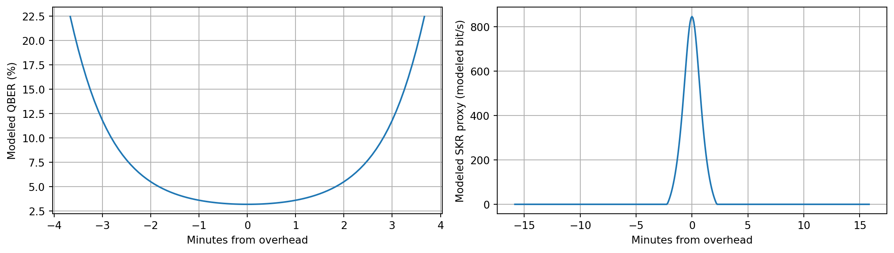

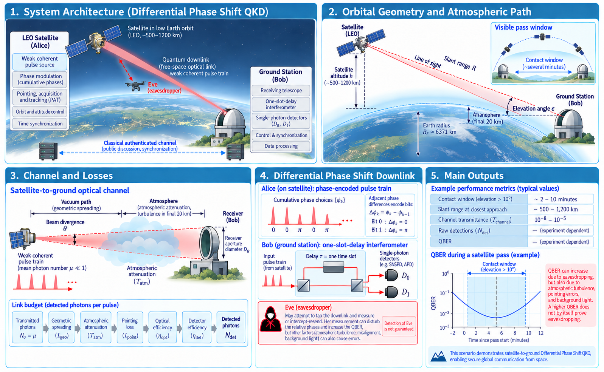
Two Ground Stations and One Trusted Satellite Relay¶↑ Contents
A single satellite cannot be treated as a passive optical mirror in this model. Instead, it establishes two independent QKD links at different times:
and
After full security processing, suppose the satellite shares:
• secure hop key with ground station A,
• secure hop key with ground station B.
The contact windows do not need to overlap because the trusted satellite can store the two keys.
How the Trusted-Key Relay Works¶↑ Contents
The satellite generates a new session key and publishes:
and
The published relay ciphertexts must be carried over an authenticated classical channel so that an adversary cannot substitute or modify the relay messages without detection.
A recovers:
while B recovers:
The satellite knows , so this architecture requires trust in the relay and secure key storage on the satellite.
If A-S produces secure bits and S-B produces secure bits, the maximum equal-length relayed key is bounded by:
The weaker hop is the bottleneck because one one-time-pad bit is consumed on each hop for every relayed session-key bit.
Two Independent Satellite Contact Windows
For this example, ground station A and B are placed at Earth central angles of -17 degrees and +17 degrees relative to the satellite's midpoint pass.
The satellite therefore reaches A's useful elevation window first and B's later. We calculate each raw-detection opportunity separately.
A key point is that simultaneous visibility is not required in this trusted-store-and-forward architecture. What matters is how many secure hop-key bits each link can accumulate and store.
Two separate ground-station contact windows
Ground angles are -17 and +17 degrees in the synthetic plane. Each station has 88 visible samples and no simultaneous contact samples. Raw-detection budgets are integrated independently.
Example calculation
A contact samples: 88
B contact samples: 88
A and B simultaneous samples: 0
A raw-detection budget: 0.734 Mbit-equivalent detections
B raw-detection budget: 0.734 Mbit-equivalent detections
Raw bottleneck upper illustration: 0.734 Mbit
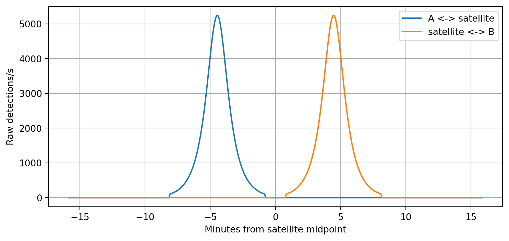
Tiny One-Time-Pad Relay Example
To make the relay arithmetic visible, use fixed 8-bit toy keys.
Assume:
and the trusted satellite wants A and B to share:
The satellite sends two different ciphertexts because the hop keys are different. A and B each XOR their own ciphertext with their own hop key and recover the same .
This demonstration is only the relay arithmetic. It does not generate or securely; those hop keys must first come from completed QKD post-processing.
Trusted relay XOR arithmetic
The relay encrypts the same session string with independent hop keys, one for each ground station. Both stations recover the session string, and the relay also knows it.
Example calculation
K_AS : 10110010
K_SB : 01101100
Session K : 01010101
C_A=K^K_AS : 11100111
C_B=K^K_SB : 00111001
A recovered : 01010101
B recovered : 01010101
A == B == K : True
Trusted relay also knows K: 01010101
Modeled Key Budget for Two Ground Stations
Raw detections are only an upper opportunity count. We therefore repeat the two-hop calculation using the modeled SKR proxy on each link separately.
For each hop:
The trusted-relay proxy budget is:
This is an asynchronous trusted-relay proxy. The contact windows can be disjoint, but in a real deployment the satellite must store two genuinely secure, authenticated hop-key inventories.
Compact modeled two-hop budget
The minimum of the two integrated hop budgets is a trusted resource bound. There is no causal buffer, expiry or scheduling simulation.
Example calculation
A modeled proxy budget: 95,190 modeled bits
B modeled proxy budget: 95,190 modeled bits
Trusted relay bottleneck: 95,190 modeled proxy bits
Overlapping contact samples: 0
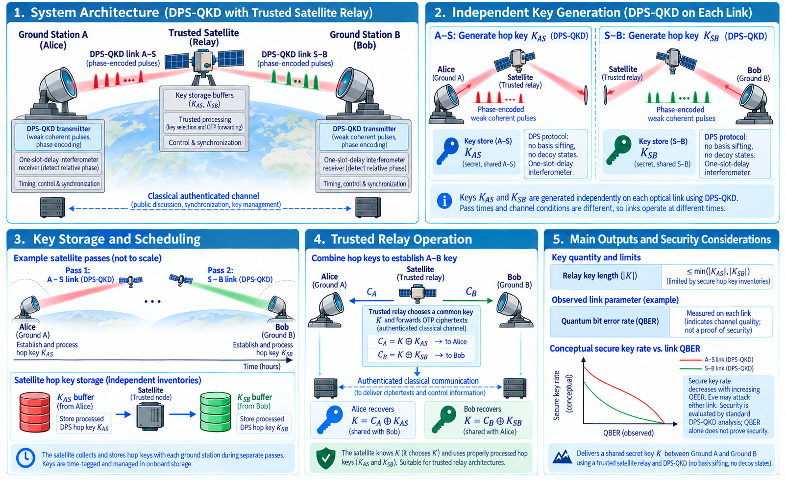
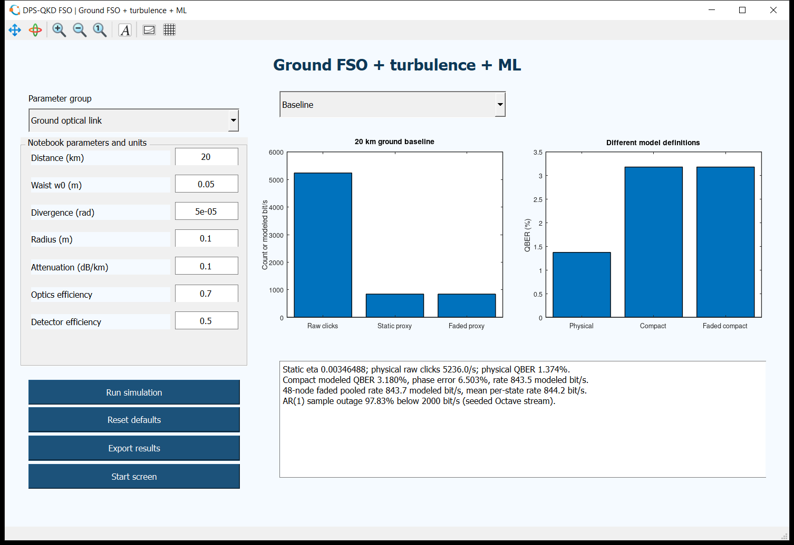
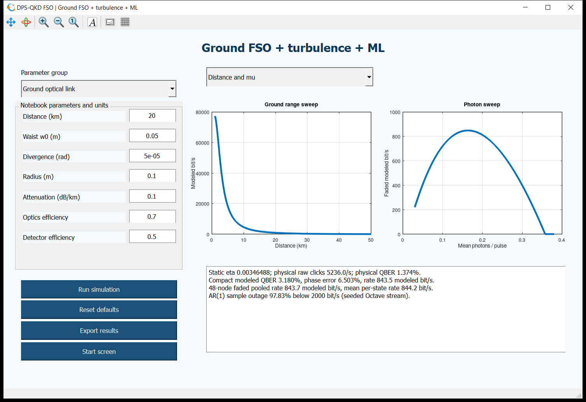
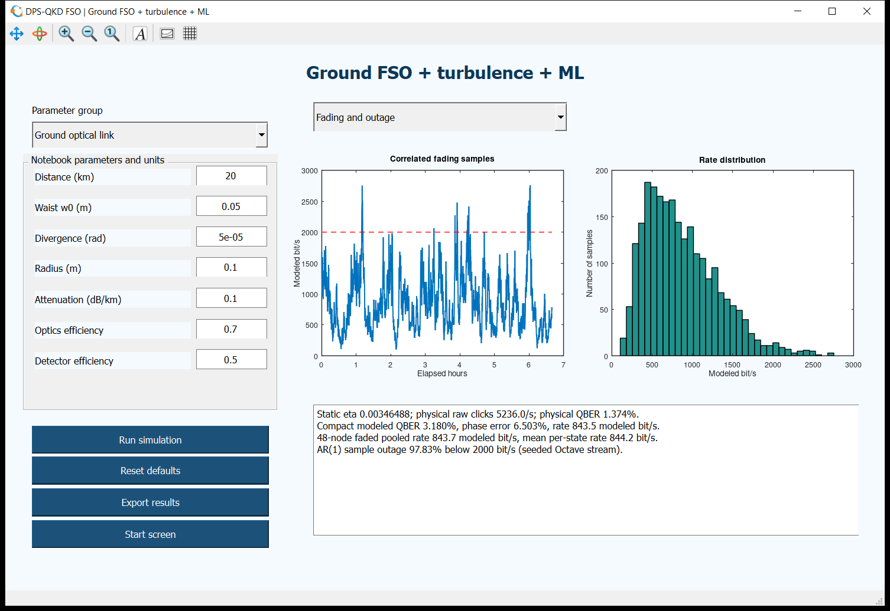
Three-Satellite Trusted Network and Route Budgets¶↑ Contents
The final topology extends the trusted-relay idea to several satellites.
Each optical edge accumulates its own key inventory:
Every satellite is treated as a trusted key-storage and forwarding node. This section does not model quantum repeaters, entanglement swapping or untrusted end-to-end QKD.
For an -edge trusted path, every delivered one-time-pad bit consumes one secure bit on each edge. Therefore:
The path is constrained by its weakest accumulated hop inventory.
We compare three conceptual routes using satellites at simple coplanar phase offsets of -12, 0 and +12 degrees. These offsets are teaching geometry, not a real constellation ephemeris.
Check Inter-Satellite Line of Sight
For two satellites on the same circular orbit with angular separation , the straight-line chord distance is:
The closest point of that chord to Earth's center is:
The optical link clears Earth when:
For our 500 km orbit:
12 degree separation gives about 1,436 km inter-satellite distance;
24 degree separation gives about 2,857 km;
Both chords still clear Earth in this simplified geometry.
The inter-satellite optical link has no atmospheric attenuation in this model, but still has geometric spreading, pointing loss, optics efficiency and detector efficiency.
Check inter-satellite geometry explicitly
At both 12 and 24 degree separation, the chord clears Earth at the 500 km orbit. The 24 degree S0–S2 link is geometrically visible; a zero modeled key rate later is not evidence of Earth obstruction.
Example calculation
Static inter-satellite geometry examples
separation=12 deg: distance= 1436.4 km, Earth clearance= 462.4 km, LOS=True
separation=24 deg: distance= 2857.1 km, Earth clearance= 349.9 km, LOS=True
Build Raw-Detection Budgets for Every Edge
The three satellite orbital phases are sampled across the same 32-minute study interval used earlier.
For ground-satellite edges we reuse the atmospheric downlink model.
For satellite-satellite edges we use:
because the path is modeled in vacuum, and then apply geometric collection, 1 dB pointing loss, 0.7 optics efficiency and 0.5 detector efficiency.
For each edge we integrate the modeled raw detection rate over time:
For each candidate route, the raw upper illustration is the minimum edge budget.
Integrate raw-detection budgets by edge
Six ground edges and three candidate inter-satellite edges form three named paths. Raw-detection-equivalent bottlenecks are not secret key budgets and routes cannot be summed without shared-resource accounting.
Example calculation
one hop through S0 edges [0.73, 0.73] Mbit-equivalent; bottleneck <= 0.73 Mbit
two satellites S0,S2 edges [0.73, 0.45, 0.73] Mbit-equivalent; bottleneck <= 0.45 Mbit
three satellites S0,S1,S2 edges [0.73, 1.55, 1.55, 0.73] Mbit-equivalent; bottleneck <= 0.73 Mbit
Multi-Hop Modeled Key Budgets
Raw detection counts do not include privacy and error-correction penalties. The final study therefore replaces each raw edge rate with the same modeled SKR proxy used earlier.
For every route:
Calculate each edge's time-dependent ,
Evaluate the compact DPS model,
Integrate the modeled proxy rate for that edge,
Take the minimum accumulated edge budget.
A route can therefore have many raw detections but still have a zero modeled proxy on one weak edge if the modeled rate becomes negative and is clipped to zero.
Routes are compared but not summed because different routes can share the same satellite nodes or key inventories. A real network scheduler would have to track inventory consumption explicitly.
Integrate compact modeled budgets by edge
The longer direct S0–S2 link has a positive raw count budget but zero compact modeled rate. The adjacent two-link chain retains positive modeled rate. Each path is the minimum independently integrated edge budget, not a time-dependent widest-path solution.
Example calculation
one hop through S0 : bottleneck 95,191 modeled proxy bits
edge budgets: {'A-S0': 95192, 'S0-B': 95191}
two satellites S0,S2 : bottleneck 0 modeled proxy bits
edge budgets: {'A-S0': 95192, 'S0-S2': 0, 'S2-B': 95192}
three satellites S0,S1,S2 : bottleneck 74,009 modeled proxy bits
edge budgets: {'A-S0': 95192, 'S0-S1': 74009, 'S1-S2': 74009, 'S2-B': 95192}No route value here certifies a finite end-to-end key.
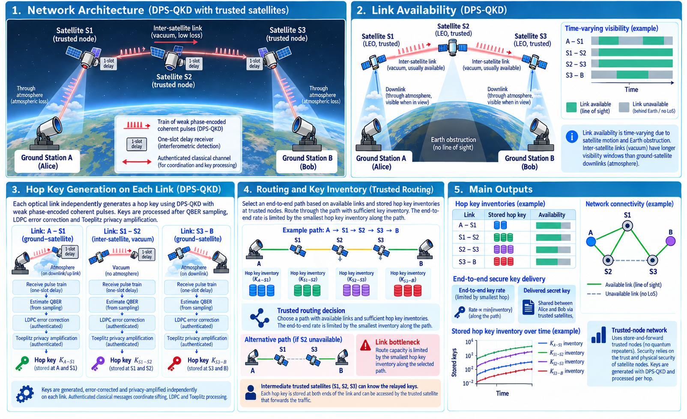
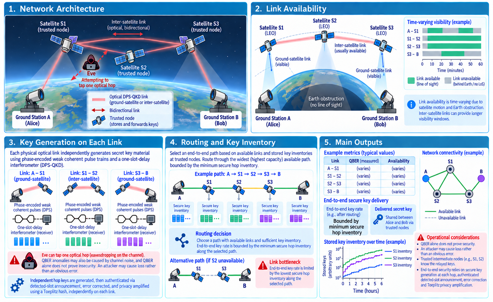
Banking Application Case Study: Bahrain Sample Bank¶↑ Contents
The following application case study places the four DPS-FSO simulation scenarios in the context of Bahrain Sample Bank (BSB), a fictional institution. The site locations, workloads, connectivity and continuity requirements are planning assumptions from the original report, not an audited customer network or a deployed quantum-security claim. No telecom-route survey, bank equipment inventory or measured site-specific optical model is available.
Case study environment and existing connectivity¶↑ Contents
BSB operates a primary data center at its headquarters in Seef, Bahrain, a disaster recovery (DR) site in Amwaj, Bahrain, and an offshore computing site in Riyadh, Saudi Arabia. Core banking workloads run on IBM i (AS/400), while the mobile banking environment uses Oracle. The case assumes that these workloads and their data reside on IBM storage infrastructure, with data synchronized from headquarters to the other computing sites. The precise IBM storage models, replication software, database replication topology, bandwidth and encryption termination points are not specified and therefore are not assumed in my analysis.
The existing HQ-to-DR data connection is a dedicated telecom-provider fiber service. Traffic from Bahrain to Riyadh is carried over site-to-site VPNs on the public internet. Numerous branches in Bahrain and Saudi Arabia also use site-to-site VPN connectivity. The approximately 14-15 km Seef-Amwaj and 420 km Bahrain-Riyadh are map based straight-line separations, not surveyed fiber route lengths or free-space satellite optical path lengths.
Table 22. Assumed BSB sites and connectivity
| Location / traffic path | Distance or role | Existing service / project assumption |
|---|---|---|
| Seef headquarters (HQ) | Primary production data center | IBM i core banking, Oracle mobile banking and IBM storage; primary replication source. |
| Amwaj disaster recovery (DR) | Approximately 14-15 km geodesic separation from HQ | Dedicated carrier fiber; receives replicated data and assumes production during planned BCP drills. |
| Riyadh offshore site | Approximately 420 km geodesic separation from Bahrain HQ | Site-to-site VPN over public internet; offshore replicated computing and storage. |
| Bahrain and KSA branch offices | Multiple sites; individual distances not specified | Site-to-site VPNs; branch traffic is separate from the HQ-DR storage replication stream. |
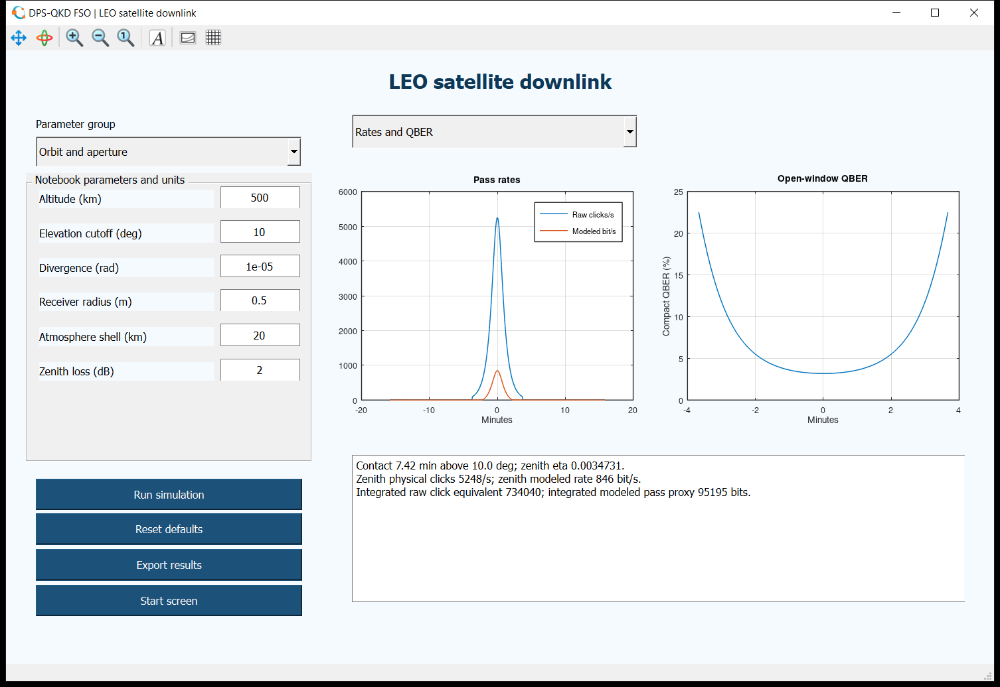
Operational context and quantum-related security problem¶↑ Contents
BSB performs two planned business continuity planning (BCP) drills each year. During each drill, production workloads operate from Amwaj DR for approximately two weeks before a controlled return to Seef HQ. Encryption and key management must therefore function when replication direction and production endpoints change. The design must protect HQ-to-DR synchronization, DR-to-HQ reverse synchronization, Bahrain-to-Riyadh transfers and relevant branch traffic without making banking availability dependent on clear weather or a satellite pass.
The application motivation is long-term confidentiality of archived traffic. QKD is considered as an additional potential source of key material; it does not encrypt the replication payload. Authenticated symmetric encryption and a validated key-establishment and authentication design remain necessary. Post-quantum or hybrid key establishment on conventional VPN infrastructure is a separate candidate workstream; the simulation does not implement it or assess current vendor support.
Application objective and specific research questions¶↑ Contents
My application objective is to evaluate a phased, quantum-safe key-establishment and data-in-transit encryption architecture for BSB that protects the replication of IBM i core banking and Oracle mobile banking information among Seef HQ, Amwaj DR and Riyadh, while preserving two-week DR operation and allowing selective expansion to branch connections.
Map the assumed bank links to the four current terrestrial and trusted satellite scenarios while distinguishing generic geometry from real bank locations.
Evaluate optical efficiency, physical and modeled QBER, rate proxies, sampled outage definitions and integrated link budgets under explicit assumptions.
Distinguish QKD key delivery from AES-256 authenticated encryption of the actual replication stream and identify practical KMS, HSM, encryption-gateway and authentication interfaces.
Assess trusted-relay and satellite-operator exposure explicitly; the current international-link models use DPS trusted nodes rather than an entangled-pair BBM92 link.
Define key continuity, reverse-replication and fallback requirements for the bank's two annual, two-week DR production exercises.
Compare dedicated QKD at selected data centers with conventional post-quantum VPN upgrades at branches, without claiming unmeasured performance, cost savings or regulatory compliance.
Cryptographic protection boundary and integration model¶↑ Contents
The bank's storage and application replication flows remain conventional data traffic. In the proposed architecture, supported encryption gateways or compatible application/transport security endpoints apply authenticated symmetric encryption, for example a correctly configured AES-256-based authenticated mode. A key-management layer identifies authorized endpoint pairs, handles key identifiers, rotation, access control, expiry, monitoring and audit, and transfers key material to the compatible encryption endpoints. I do not assume that IBM i, Oracle, IBM storage controllers or existing VPN appliances natively ingest QKD keys; those interfaces and vendors must be examined before a proof of concept.
Where compatible QKD equipment exists, separate optical quantum links could supply key material to authorized key-management entities. The original report identifies ETSI GS QKD 014 as a possible application-interface reference; actual device conformance and integration would need to be demonstrated. Existing fiber or IP paths would continue carrying encrypted replication traffic. A carrier data service does not automatically expose a transparent optical path suitable for QKD, and a public-internet VPN is not a quantum optical channel.
QKD-derived key material and a supported post-quantum key-establishment result could be incorporated under an explicitly validated hybrid key-derivation and authentication design. Merely concatenating keys or claiming a fallback is quantum-safe without a security analysis would be insufficient. Key generation, key usage and rekey intervals must be sized using measured application traffic, equipment limits and outage requirements. The present simulation does not demonstrate full-rate one-time-pad encryption, production replication throughput or an approved hybrid cryptographic protocol.
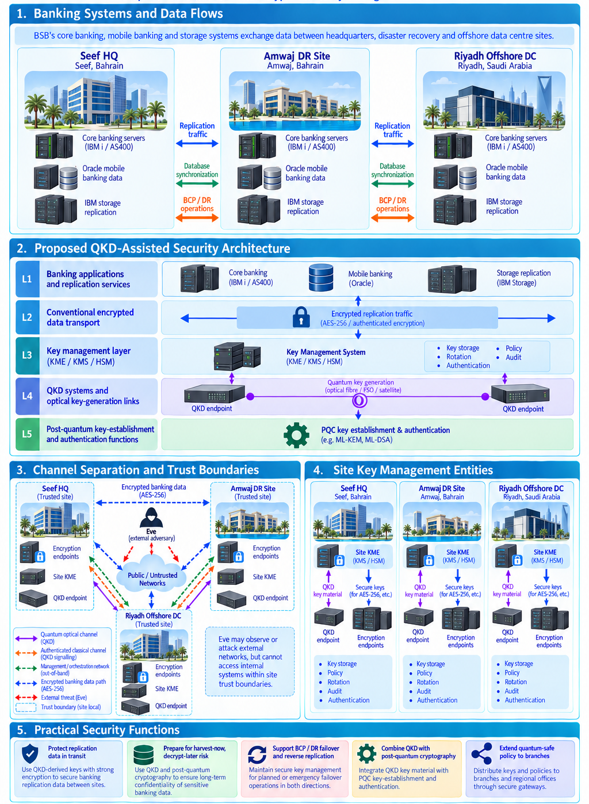
Mapping the four current DPS scenarios to BSB infrastructure¶↑ Contents
Scenario 1: Seef headquarters to Amwaj disaster recovery
It represents the short terrestrial connection between HQ and DR. My existing 20 km terrestrial example supplies a bounding educational comparison for the assumed 14-15 km separation, but I have not labeled that baseline as a direct 15 km BSB site simulation. The Gaussian optical model and DPS/log-normal turbulence extension enable evaluation of a possible rooftop FSO quantum channel, subject to a verified unobstructed optical line of sight, building permissions, alignment, dust, haze, weather and daylight background. The bank's existing telecom fiber provides a second potential physical-QKD route only if the provider can supply a compatible optical path and the fiber-specific model is separately evaluated. Encryption of IBM i/Oracle replication remains on the existing high-capacity transport, not on the quantum-photon stream.
Scenario 2: Satellite link with one Bahrain terminal
It models a LEO satellite communicating with one Bahrain ground terminal at a time. I use changing elevation, slant range, finite atmospheric-shell loss, telescope collection, QBER and contact-window integration to study whether a satellite service could replenish a local key pool. A single downlink establishes a key between that satellite and its ground receiver; it does not alone establish a shared Bahrain-Riyadh key. Actual ground coordinates, satellite ephemerides, weather availability, provider equipment and a service contract would be needed for deployment. Intermittent visibility makes authenticated local key storage and outage policy central design parameters.
Scenario 3: Bahrain–Riyadh trusted satellite relay
The trusted-relay concept establishes independent link keys with two ground terminals and assumes trusted satellite storage between separate contacts. The Bahrain–Riyadh VPN continues to carry encrypted replication traffic. Operator trust, key custody, authentication and deployment arrangements require separate assessment. The current ±17° station geometry is a generic demonstration, not a simulation of these actual sites. Its approximately 95,190 modeled proxy bits are a minimum integrated hop budget, not a scheduled or certified end-to-end key delivery result.
Scenario 4: Multiple trusted satellites
The current network studies three satellites and three fixed routes. It computes deterministic ground-link windows, Earth clearance for inter-satellite links and minimum integrated edge budgets. It does not implement the earlier report’s simultaneous widest-path selection or a scheduled constellation with key inventories. Its banking relevance is a possible future path for replenishing authorized site keys, contingent on actual service access and trusted-node arrangements. Branches connected by ordinary VPN do not automatically obtain end-to-end QKD.
Table 23. Current DPS scenario mapping for the bank
| Project stage | BSB use case | Deployment condition / evidence boundary |
|---|---|---|
| Scenario 1 — ground | Seef–Amwaj key-establishment study | Generic 20 km FSO baseline; needs surveyed site optics or a separate fiber model. |
| Scenario 2 — LEO | One-terminal satellite replenishment | Actual ephemeris and terminal required; one downlink does not establish a Riyadh key. |
| Scenario 3 — trusted relay | Two-site trusted key relay | Generic ±17° geometry; integrated bottleneck, no causal inventory simulation. |
| Scenario 4 — network | Fixed routes through trusted satellites | Three satellites; integrated edge minima, no schedule or resource allocation. |
Phased implementation concept¶↑ Contents
I distinguish the four numerical research stages from proposed bank implementation phases. The following phases are a forward-looking plan: none is represented as a completed BSB production deployment. Decisions about capital expenditure, supplier selection and regulatory approval remain outside the numerical simulation.
Table 24. Phased implementation and acceptance conditions
| Phase | Scope of work | Acceptance condition |
|---|---|---|
| 0 - baseline | Inventory IBM i, Oracle, storage replication, VPN crypto, certificate lifecycle, traffic and data-retention needs. | Document existing encryption endpoints, key-establishment exposure, replication directions and business requirements. |
| 1 - PQC pilot | Evaluate supported quantum-resistant or hybrid VPN key establishment between Bahrain and Riyadh and selected branches. | Validated interoperability, authenticated handshakes and acceptable VPN availability. |
| 2 - local QKD PoC | Survey Seef-Amwaj fiber suitability and FSO line of sight; test physical QKD where practical. | Measured optical loss, QBER, usable key rate, uptime and environmental availability. |
| 3 - encryption integration | Test vendor-supported KMS/HSM and encryption-gateway delivery to the replication transport. | Confirmed key lifecycle, encryption correctness and replication throughput/lag within targets. |
| 4 - BCP exercise | Run planned failover, two-week DR operation, reverse replication and restoration with monitored keys. | No unapproved downgrade; agreed recovery objectives and key-continuity requirements met. |
| 5 - satellite pilot | Investigate available trusted DPS-relay suppliers, terminal siting and satellite passes. | Proven access, security assumptions, measured rates and operator trust/compliance assessments. |
| 6 - expansion | Assess multiple trusted satellites and a branch-oriented quantum-safe connectivity strategy. | Demonstrated operating model and justified total cost of ownership. |
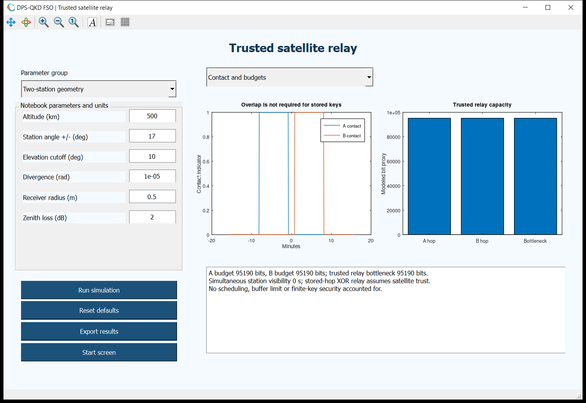
Branch-office extension and cost boundaries¶↑ Contents
For BSB branches, extending quantum-safe cryptography through supported VPN software and compatible gateways may reuse existing IP connectivity and avoid optical terminals at every location. Such branch tunnels may use a properly supported post-quantum or hybrid key-establishment mechanism, but they are not end-to-end QKD links. A branch can use a centrally governed KMS only if delivery, authorization and communication with that KMS remain suitably authenticated and protected. A central QKD link cannot automatically make ordinary public-internet branch traffic quantum-key-distributed.
Table 25. Branch quantum-safe architecture options and cost boundaries.
| Architecture | Appropriate case-study scope | Additional cost drivers and limitations |
|---|---|---|
| PQC/hybrid VPN at branches | Many existing Bahrain/KSA VPN branches | Gateway support/licensing, firmware, certificates, monitoring, interoperability and managed migration. |
| QKD-assisted central sites | HQ, DR and potentially Riyadh | Optical terminals, suitable fiber or telescope sites, KMS/HSM, encryption appliances and operations. |
| Dedicated QKD to every branch | Only branches with justified high-security needs and a real optical path | Additional quantum endpoints, circuits, alignment/service contracts, redundancy and support; ordinary VPN is insufficient. |
No BSB-specific cost estimate or claim of branch savings can be established from the available case-study inputs. Before costing, the bank would need branch counts, VPN platform inventory, actual carrier service types, optical-route surveys, required key-refresh policy, encryption throughput, storage replication licensing, satellite service availability and support pricing. The bank's Bahrain and Saudi legal, privacy, banking supervisory and outsourcing obligations also require a jurisdiction- and licence-specific assessment rather than an assumed compliance conclusion.
The case study is a phased engineering proposal. The current calculations cannot demonstrate that QKD has protected bank traffic or sustained a two-week disaster-recovery exercise. Conventional post-quantum protection and any additional terrestrial or satellite QKD service need separate implementation and validation. All DPS rate integrals reported here remain illustrative proxy quantities.
GNU Octave: Updated Numerical Models and GUI Dashboards¶↑ Contents
The accompanying GNU Octave GUI was updated to align with the Jupyter notebook. It separates raw detector rate, detection-weighted QBER and the same generic modeled-SKR proxy. In the 20 km ground scenario it uses 48-node log-normal quadrature, a 10 MHz gate clock and the same six-feature order and search limits described above.
Run START_PROJECT.m for the graphical launcher. The Ground FSO + turbulence + ML scenario provides the equal-budget ML vs physics page, ML convergence, a conditional μ-versus-aperture SKR map and CSV exports. RUN_ALL.m can compute all scenarios using the full one-million-candidate benchmark; it may be slow on some workstations, especially within Octave.
Octave settings: 150 training physics labels, 100 independent physics test points, 50 physics shortlist checks, 300 physics-only samples, one million ML-only proposals, Gaussian RBF length 0.55, regularization 10⁻⁴ and a 5% engineering QBER cutoff. The benchmark includes model-training and prediction cost when reporting wall-clock time.
Consolidated Results and Discussion¶↑ Contents
Project-Scope Summary¶↑ Contents
The primary quantitative result is DPS-FSO modeled QBER, raw detector rate and a generic entropy-based SKR proxy over a terrestrial link with log-normal turbulence. Five QKD protocols and four reconciliation methods are educational foundations; the numerical FSO optimization is not a simulation of E91, COW, Cascade, Winnow or Polar-key throughput.
The satellite/relay/network chapters reuse DPS-oriented link rates and integrated hop budgets under separate geometry assumptions. Their accumulated proxy bits are not directly comparable to instantaneous terrestrial bit/s or composable secret-key throughput.
Consolidated Results and Limitations¶↑ Contents
Table 26. Consolidated numerical results and interpretation.
| Study / scenario | Current numerical result | Measurement unit | Interpretation / limitation |
|---|---|---|---|
| 20 km physical receiver | 5,235.96 detections/s; QBER 1.374% | Raw detections/s | Independent two-detector click model; before modeled key post-processing. |
| 20 km compact DPS model | 843.5 modeled bit/s; QBER 3.180% | Modeled bit/s | Compact photon-number and phase-error approximation. Not the same metric as raw detections. |
| 48-node turbulence model | 843.7 pooled; 844.2 mean conditional | Modeled bit/s | Detection-weighted log-normal fading results; pooling differs from averaging conditional rates. |
| ML-assisted optimization | 1,918 modeled SKR bit/s; QBER 1.427% | Modeled SKR bit/s | One million ML candidate predictions; best result verified by physics within a 300-evaluation budget. |
| Direct physics optimization | 1,419 modeled SKR bit/s; QBER 1.405% | Modeled SKR bit/s | Best result from 300 direct physics evaluations; same physics-evaluation budget as ML route. |
| ML versus direct (single seed) | +35.2% modeled SKR for ML-assisted selection | Relative difference | Higher sampled, physics-verified result, but no measured runtime speedup; not a general superiority claim. |
| Single LEO satellite pass | 95,195 accumulated modeled key bits over 7.42 min; average ≈214 bit/s | Total bits/pass; average bit/s | Time-integrated key budget from changing link conditions, not 95,195 bit/s. |
| One trusted satellite relay | 95,190 accumulated modeled key bits | Total relay bits | End-to-end buffered budget limited by the smaller of the two independently integrated satellite-ground link budgets. |
| Three-satellite trusted chain | 74,009 accumulated modeled key bits | Total end-to-end bits | Route budget limited by its bottleneck integrated hop-key budget under trusted-node assumptions. |
In the ML comparison, both routes use the same 300 direct physics calls and illustrative QBER<5% criterion. The ML route additionally screens one million approximate predictions and rechecks its 50 strongest proposals. A recorded single-seed improvement in modeled SKR is a solution-quality observation, not evidence that ML is faster or that the output is a DPS-security-certified rate. Octave implements aligned equations but can produce different random candidate optima.
Conclusion and Future Work¶↑ Contents
This project presents a comprehensive simulation-based study of Differential Phase Shift Quantum Key Distribution (DPS-QKD) over Free-Space Optical (FSO) channels, progressing from fundamental QKD principles to terrestrial optical links, atmospheric turbulence, machine-learning-assisted optimization, satellite communication, and potential banking applications.
The study first examines five important QKD protocols—BB84, BBM92, Ekert91 (E91), Coherent One-Way (COW), and DPS—to establish their operating principles, encoding methods, and security considerations. It also explores quantum error estimation, information reconciliation using Cascade, Winnow, LDPC, and Polar codes, and privacy amplification through Toeplitz hashing. These concepts provide the theoretical foundation for the detailed DPS-QKD simulation.
The developed DPS-FSO model incorporates weak coherent optical pulses, differential phase encoding, one-slot-delay interferometry, photon detection, optical attenuation, pointing losses, detector imperfections, and log-normal atmospheric turbulence. The numerical framework evaluates raw detection rates, Quantum Bit Error Rate (QBER), and a modeled Secret Key Rate (SKR) using a generic asymptotic entropy-based post-processing approximation. Detection-weighted statistical averaging is applied to obtain more representative results under fluctuating channel conditions.
A major component of the project is the application of Machine Learning (ML) to constrained DPS-FSO parameter optimization. A six-parameter Radial Basis Function (RBF) surrogate model is trained using physics-generated data to predict detector rates and QBER, from which modeled SKR is calculated. To evaluate the contribution of ML fairly, the study compares direct physics optimization and ML-assisted optimization using an equal budget of 300 physics-model evaluations.
The ML-assisted approach evaluates one million candidate parameter combinations and physically verifies its most promising designs. In the recorded single-seed experiment, ML-assisted optimization identified a design achieving approximately 1,918 modeled SKR bit/s, compared with 1,419 modeled SKR bit/s from the direct physics search, representing an improvement of approximately 35.2% in the selected modeled key rate.
The study further extends DPS-QKD modeling to Low Earth Orbit (LEO) satellite downlinks, trusted satellite relays, and multi-satellite networks. These simulations demonstrate the effects of orbital geometry, limited contact windows, optical losses, and link availability on accumulated key generation. A banking application case study illustrates how such technologies could potentially support long-term cryptographic key protection between geographically separated data centers.
Overall, the project establishes an integrated framework for studying DPS-QKD performance under realistic optical-channel constraints and demonstrates how physics-based simulation and machine learning can be combined to explore engineering design alternatives. It provides a foundation for further research into secure terrestrial and satellite quantum communication systems.
Future Work¶↑ Contents
Future research shall focus on improving the accuracy, security, and practical implementation of DPS-QKD over FSO channels.
DPS-specific security: Implement a composable finite-key security framework that considers multiphoton effects, eavesdropping risks, reconciliation leakage, authentication, and privacy amplification to obtain more rigorous SKR estimates.
Information reconciliation: Extend Cascade, Winnow, LDPC, and Polar codes into practical implementations and compare their efficiency, error-correction performance, and information leakage.
Atmospheric modeling: Incorporate Monte Carlo simulations, beam wander, scintillation, pointing errors, and real atmospheric measurements, particularly from Bahrain and nearby regions.
Machine learning: Investigate active learning, Bayesian optimization, multiple random seeds, and computationally intensive physics models to evaluate ML efficiency and robustness under realistic environmental conditions.
Satellite networks: Introduce realistic orbital trajectories, satellite tracking, contact scheduling, trusted-node key storage, and dynamic routing to improve end-to-end key-distribution estimates.
Experimental and banking applications: Validate the simulations using physical optical and quantum components and explore integration with banking encryption systems, hardware security modules, and key-management infrastructure.
Acknowledgement of Generative AI Assistance¶↑ Contents
I acknowledge the use of OpenAI’s ChatGPT and Codex in the development and documentation of this project. ChatGPT assisted with diagrams, technical explanations and report refinement, while Codex supported the development, debugging and testing of Python and GNU Octave simulations. The project objectives, technical requirements and design decisions were directed by me. I reviewed the AI-assisted outputs and take responsibility for the final content, results and interpretations.
References¶↑ Contents
Dr. Neel Kanth Kundu, Quantum Key Distribution and Post-Processing, course lecture materials, Post Graduate Diploma in Advanced Communication Engineering with Quantum and AI Integration, Indian Institute of Technology Delhi, 2026. Course materials, including relevant Lecture 1-23 notes.
Dr. Harshan Jagadeesh, Cryptography and Network Security, course lecture materials covering Basic Principles, Block Ciphers, DES and AES, Post Graduate Diploma in Advanced Communication Engineering with Quantum and AI Integration, Indian Institute of Technology Delhi, 2026.
Dr. Abhishek Dixit, Quantum Algorithms and Quantum Computing, course lecture materials covering Quantum Algorithms, Quantum Fourier Transform, Quantum Phase Estimation, Shor’s Algorithm and Grover Search Algorithm, Post Graduate Diploma in Advanced Communication Engineering with Quantum and AI Integration, Indian Institute of Technology Delhi, 2026.
Dr. Manav Bhatnagar, MIMO Communications and Space-Time Coding, course lecture materials covering Maximal Ratio Transmission, Error Probability Analysis for MIMO, Orthogonal Space-Time Block Codes and Transmit Diversity, Post Graduate Diploma in Advanced Communication Engineering with Quantum and AI Integration, Indian Institute of Technology Delhi, 2026.
U. Nath, R. Meena, S. Ali and N. K. Kundu, "A Tutorial on Quantum Key Distribution Protocols With Interactive Simulation of QBER and SKR Performance Metrics," IET Quantum Communication, vol. 7, article e70033, 2026. DOI: https://doi.org/10.1049/qtc2.70033
X. Ma, B. Qi, Y. Zhao and H.-K. Lo, "Practical decoy state for quantum key distribution," Physical Review A, vol. 72, article 012326, 2005. DOI: https://doi.org/10.1103/PhysRevA.72.012326
C. H. Bennett and G. Brassard, "Quantum cryptography: Public key distribution and coin tossing," Theoretical Computer Science, vol. 560, pp. 7-11, 2014. Original work presented in 1984. DOI: https://doi.org/10.1016/j.tcs.2014.05.025
E. Waks, H. Takesue and Y. Yamamoto, "Security of differential-phase-shift quantum key distribution against individual attacks," Physical Review A, vol. 73, article 012344, 2006. DOI: https://doi.org/10.1103/PhysRevA.73.012344
C. H. Bennett, G. Brassard and N. D. Mermin, "Quantum cryptography without Bell's theorem," Physical Review Letters, vol. 68, pp. 557-559, 1992. DOI: https://doi.org/10.1103/PhysRevLett.68.557
S. P. Neumann, T. Scheidl, M. Selimovic, M. Pivoluska, B. Liu, M. Bohmann and R. Ursin, "Model for optimizing quantum key distribution with continuous-wave pumped entangled-photon sources," Physical Review A, vol. 104, article 022406, 2021. DOI: https://doi.org/10.1103/PhysRevA.104.022406
S. R. Kondamuri, N. K. Kundu and A. Ghanshyala, "Quantum Communication in Weakly Turbulent Channels: Error Analysis and Capacity Bounds," IEEE Wireless Communications Letters, vol. 13, no. 12, pp. 3658-3662, 2024. DOI: https://doi.org/10.1109/LWC.2024.3485533
Y. Luo, X. Cheng, H.-K. Mao and Q. Li, "An Overview of Postprocessing in Quantum Key Distribution," Mathematics, vol. 12, no. 14, article 2243, 2024. DOI: https://doi.org/10.3390/math12142243
L. Guo, Q. Ran, D. Jin and D. Huang, "QKD Iterative Information Reconciliation Based on LDPC Codes," International Journal of Theoretical Physics, vol. 59, pp. 1717-1729, 2020. DOI: https://doi.org/10.1007/s10773-020-04438-9
M. Tomamichel, C. Schaffner, A. Smith and R. Renner, "Leftover hashing against quantum side information," IEEE Transactions on Information Theory, vol. 57, no. 8, pp. 5524-5535, 2011. DOI: https://doi.org/10.1109/TIT.2011.2158473
National Institute of Standards and Technology, Module-Lattice-Based Key-Encapsulation Mechanism Standard, FIPS 203, August 2024. DOI: https://doi.org/10.6028/NIST.FIPS.203